Vampiros de verdad: 'Drácula' de Francis Ford Coppola
Sun, 27 Nov 2011 17:12:07 GMT
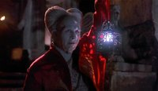
He cruzado océanos de tiempo para encontrarte
Cuando medio mundo quedó encantado, y el otro medio no, con la vuelta de Francis Ford Coppola a la saga de ‘El padrino’, el famoso director ganador de cinco Oscars sorprendió con su siguiente proyecto, una adaptación de la mítica novela de Bram Stoker sobre el más conocido de los vampiros literarios y cinematográficos. La última adaptación oficial databa de 1979 a cargo de John Badham, y atrás quedaban las exploraciones de la Hammer, con Terence Fisher y Christopher Lee a la cabeza, y también las míticas creaciones de Tod Browning y F.W. Murnau, amén de un buen número de apariciones en películas no tan conocidas —hablamos de uno de los personajes de ficción más llevados a una pantalla de cine—, por lo que volver a un personaje tan tratado era, cuanto menos, curioso. Todo el mundo estaba expectante por saber si Coppola repetiría un fracaso del estilo de ‘Corazonada’ (‘One From the Heart’, 1982) —con el que comparte el hecho de haber sido rodadas íntegramente en estudio— o, por el contrario era un éxito.
‘Drácula’ (‘Bram Stoker´s Dracula’, 1992) terminó siendo uno de los más grandes éxitos de su director en una época en la que los avances en los efectos visuales empezaban a cobrar una gran importancia —recordemos que esta película está filmada entre ‘Terminator 2: el juicio final’ (‘Terminator 2: Judgment Day’, James Cameron, 1991) y ‘Parque jurásico’ (‘Jurassic Park’, Steven Spielberg, 1993), que todavía tienen el listón muy alto al respecto—. Coppola utilizó efectos bastante artesanales para así poder abaratar la producción, pues en Columbia no iban a dejar que se pasasen del presupuesto asignado, que al final quedó en unos 40 millones de dólares. El origen de la película se encuentra en el acuerdo que Winona Ryder y Coppola tenían por aquel entonces, debido a que la actriz no “pudo” protagonizar ‘El padrino, parte III’ (‘The Godfather, part III’, 1990) —fue sustituida por Sofia Coppola, para desgracia de muchos— y el director acordó con ella que le presentase un guión interesante en el que ambos pudiesen colaborar. Lo que en un principio iba a ser una miniserie de televisión dirigida por Michael Apted, terminó siendo la película que hoy todos conocemos. Afortunadamente.
La controversia con esta película surgió a raíz de su título original, ‘Bram Stoker´s Dracula’ —a punto estuvo de titularse ‘Francis Ford Coppola´s Dracula’, pero al propio director no le pareció una buena idea—, y de las declaraciones de su guionista James V. Hart —si echamos un vistazo a su currículum, comprobaremos que éste es el mejor trabajo de su carrera—, que aseguraba haber realizado una escritura totalmente fiel a la obra de Stoker. Absolutamente falso. Y ahí empezaron los problemas, pues numerosos fanáticos del libro, amén de literatos varios y autores teatrales conocedores profundos del original, aprovecharon para sacar sus colmillos y atacar sin piedad al film de Coppola, sin caer en la cuenta —ignorancia, lo llamo yo— que el medio cinematográfico posee herramientas muy distintas a las de la literatura. Además del hecho de que una cosa es la promoción de un film, y otra bien distinta el film en sí, prueba patente de que muchos espectadores juzgan una obra cinematográfica por cómo se la han vendido y no por lo que la obra es o les ha sugerido.
James V. Hart habló de más al afirmar esa fidelidad, pues a la vista está que no es así. Sin embargo eso no invalida para nada la película, la cual presenta unas novedades con respecto al original que también suponen una sorpresa al compararla con cualquier otra adaptación del mítico vampiro. Para empezar tenemos un prólogo, realmente fascinante, en el que vemos el origen de Drácula y su amor por su Elisabeta, su partida a la batalla y posterior reniego de la Iglesia, a la que representó siendo un feroz guerrero. Un prólogo lleno de fuerza en el que Coppola deja clara la intencionalidad teatral del relato, filmando una sangrienta batalla como si de sombras chinescas se tratase. Gary Oldman —en un papel para el que fueron considerados Andy Garcia, quien lo rechazó por el alto contenido sexual de la película, Gabriel Byrne, Armand Assante, Antonio Banderas, Viggo Mortensen y Jeremy Irons, quien a punto estuvo de iniciar rodaje—, Winona Ryder y Anthony Hopkins —que llega a realizar tres papeles en la película— protagonizan este pequeño segmento en el que se subraya el carácter romántico y sangriento de la historia. Amor y sangre unidos en un fatídico destino.
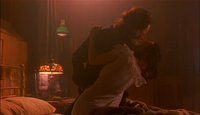
Destino que compartirán los mismos personajes siglos después. Oldman da vida a un Drácula envejecido a punto de trasladarse a Londres, y Hopkins y Ryder a personajes que bien podrían ser la reencarnación de Elisabeta —Mina Harker— o del hombre que condena el suicidio de aquella —Van Helsing—. Tres líneas narrativas que terminan confluyendo cuando Drácula en Londres deja mortales rastros de su existencia. El encuentro entre Mina y un Drácula completamente rejuvenecido gracias al poder de la sangre muestran a un Coppola muy inspirado que rinde homenaje al nacimiento del cine, el cual curiosamente coincidió con la publicación de la novela de Stoker. Imágenes del conde, cuya presencia parece recordar al Corleone de la saga más conocida de su realizador, paseando por las calles londinenses al ritmo de los fotogramas de un viejo cinematógrafo, y el posterior encuentro con su amada reencarnada poseen una fuerza arrebatadora que se repite en la escena del lobo, momento en el que Mina queda completamente fascinada por el conde, o la escena de la absenta, de una sensualidad y erotismo muy marcados. Al fin y al cabo ‘Drácula’ es una historia de amor y sexo.
Y siempre ha sido así, incluidas las versiones de Murnau, Browning o Fisher, a las que Coppola rinde sendos homenajes en diversos instantes del film. Pero esta vez se hace hincapié en el lado humano de Drácula, quien recordemos, fue humano una vez. Ese es otro de los aspectos que diferencian esta adaptación del resto. Drácula es un eterno enamorado entristecido, primero por la muerte de su amada, y luego enfurecido por el hecho de que la Iglesia, a la que tanto defendió, rechaza el alma de Elisabeta por haberse suicidado. Su maldición, provocada por él mismo, será vagar a través de los tiempos en busca de su amor perdido —la frase que inicia este texto me parece una de las más bellas jamás pronunciadas en una película, por todo lo que encierra y por ser un ejemplo perfecto de síntesis—, dejar muertes allá por donde pasa, encontrar a su amor, y con ello el perdón de Dios en un clímax lleno de lirismo. Nunca la muerte del vampiro más famoso de todos los tiempos estuvo tan cargada de belleza, y aunque los colores, y en parte los decorados, evocan a los mejores títulos de la Hammer, Coppola es capaz de crear algo nuevo con un material tan manido.
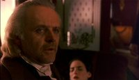
La música del polaco Wojciech Kilar, de gran épica en algunos momentos y terroríficamente íntima en otros, llena cada plano del film, y es capaz de transportarnos a esa especie de mundo onírico creado por Coppola, donde se funden cine, teatro y literatura con inusual equilibrio, algo que muy probablemente ha enfadado a los más puristas de cada arte. Nunca una actriz tan mediocre como Winona Ryder estuvo tan sensual y atractiva, Anthony Hopkins da vida a un Van Helsing tan temible como el conde Drácula, terriblemente conservador y puritano, y Gary Oldman hace la interpretación de su vida, logrando que sintamos al mismo tiempo fascinación y repulsión. Al respecto cabe citar la muy inteligente decisión de que Mina es la única, junto con el espectador, que ve al Drácula humano. El resto de personajes sólo lo ven como un viejo decrepito —Keanu Reeves, sin duda lo peor del film, dando vida a Jonathan Harker, en su visita al castillo en Transilvania, y cuya estancia es una muy barroca pesadilla—, o un monstruo, al que también da vida un Oldman lleno de maquillaje, obra y gracia de Greg Cannom.
Coppola se reunió con el equipo en su rancho, días antes de iniciar rodaje y entre otras cosas, obligó a los actores a una lectura de la obra de Stoker en voz alta, algo que les llevó dos días enteros. El famoso realizador quiso que sus intérpretes estuviesen perfectamente familiarizados con el material. El resultado, dejando a un lado alguna laguna narrativa —arreglada por la voz en off de Hopkins como uno de los narradores, algo que nunca gustó demasiado a Coppola— y el penoso trabajo de Reeves, es firme y por decirlo de alguna manera, vampirizador. Y he ahí uno de los grandes aciertos de Coppola realizador. Su puesta en escena logra una conexión única, y muy elegante, entre el poder vampirizador del cine —la escena de las sombras chinescas antes comentada— y su personaje. Porque ante todo no estamos ante el Drácula de Stoker, al cual sin duda reconocemos, sino ante el de Coppola, ante una reinterpretación del mito. Y nos ha seducido como lo haría el más grande de los vampiros, dejando claro que su existencia y su poder sólo tienen una razón de ser: el amor.
Vampiros de verdad en Blogdecine:
- ‘Nosferatu’
- ‘Dracula’ de Tod Browning
- ‘Sombras trágicas, ¿vampiros?’
- ‘Drácula’, de George Melford
- ‘Vampyr’ de Carl Theodor Dreyer
- ‘La marca del vampiro’ de Tod Browning
- ‘El regreso del vampiro’ de Lew Landers
- ‘Drácula’ de Terence Fisher
- ‘Las novias de Drácula’ de Terence Fisher
- ‘Planeta sangriento’ de Curtis Harrington
- ‘I Vampiri’ de Riccardo Freda
- ‘La sangre del vampiro’ de Henry Cass
- ‘El beso del vampiro’ de Don Sharp
- ‘Drácula, príncipe de las tinieblas’ de Terence Fisher
- ‘Drácula vuelve de la tumba’ de Freddie Francis
- ‘El baile de los vampiros’ de Roman Polanski
- ‘Las amantes del vampiro’ de Roy Ward Baker
- ‘Lust for a Vampire’ de Jimmy Sangster
- ‘Drácula y las mellizas’ de John Hough
- ‘La mansión de los crímenes’ de Peter Duffell
- ‘El vampiro sangriento’ de Miguel Morayta
- ‘The Night Stalker’ de John Llewellyn Moxey
- ‘Noche de miedo’ de Tom Holland
- ‘Jóvenes ocultos’ de Joel Schumacher
- ‘La invasión de los vampiros’ de Miguel Morayta
- ‘El vampiro’ de Fernando Méndez
- ‘Déjame entrar (Let Me In)’ de Matt Reeves
- ‘Los viajeros de la noche’ de Kathryn Bigelow

'When You're Strange', crónica de una autodestrucción
Sun, 27 Nov 2011 08:44:56 GMT
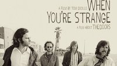
The Doors tienen su lugar en la historia del cine, tanto por la película homónima de 1991 de Oliver Stone, como por la atmósfera que ‘The End’ aporta a la escalofriante secuencia de los helicópteros del arranque de ‘Apocalypse Now’ (1979), de Francis Ford Coppola. Muchas otras películas han contado con su música en sus bandas sonoras. Por eso y por otros motivos – el mito del rock and roll que fue Jim Morrison tuvo una vida de película y quedaron algunas incógnitas por resolver–, no nos sorprende que el director Tom DiCillo (‘Johnny Suede’, ‘Vivir rodando’, ‘Una rubia auténtica’, ‘Delirious‘…) los haya escogido para elaborar un documental que lleva por título un verso de una de las canciones de la banda: ‘When You’re Strange’ (“cuando eres extraño”).
Más que sobre la banda The Doors, el rockumentary está centrado en la figura de Morrison y lo que esta supuso para el mundo –la película también contiene un interesante estudio de la juventud en la sociedad de la época– y para sí mismo. Analiza cómo subió como la espuma, cómo sabía gestionarse para dotarse del halo que consiguió, ya fuese con los atuendos que él mismo elegía o con sus posturas y movimientos sobre el escenario. Pero también hace una crónica de su autodestrucción, empujada por las drogas y alcohol, que no eran para él más que un vehículo con el que encontrar las puertas de la percepción –el nombre del grupo viene del libro de Aldous Huxley de 1954 ‘The Doors Of Perception‘–, por lo que, fuese con esas sustancias o con otras, su final podría haber sido siempre el mismo. Una estrella que brilló con mucha intensidad, pero que no podía mantenerse con ese esplendor durante demasiado tiempo.
DiCillo ha tenido la suerte de encontrarse con una gran caja de material, tanto inédito como conocido, que ha motivado el montaje del documental, que fue encargado por los productores al director. Ante tantas fotografías y horas de imágenes de inmensa calidad y elocuencia, el cineasta toma la férrea decisión de limitarse a utilizar el archivo. Es esta una decisión valiente, pero que lo compromete hasta el punto de impedirle incluir entrevistas con los componentes vivos del grupo, declaraciones de entonces o de ahora o recreaciones. Esta pureza de aporta un valor a la cinta, pero no evita que echemos de menos escuchar las reacciones de los miembros ante la actitud de Jim, las discusiones que sus problemas seguro que acarreaban –como puede verse en el ‘Some Kind of Monster’, de Metallica– o algún otro documento que nos aclare las incógnitas que aún tras esta película quedan abiertas. Lo único que DiCillo añade a las imágenes es la voz en off.
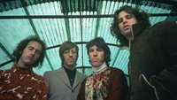
El texto, escrito por el propio DiCillo, me parece que tiene mayor valor que el montaje de imágenes, muchas de las cuales ya se habían visto en numerosas ocasiones. Esta narración es sumamente poética y embriagadora y no juzga ni mitifica, pero se sitúa, como el narrador de una novela, muy cerca de su protagonista. De forma aparentemente fría, sin entrar a valorar los datos que lanza, consigue profundizar en la psique de Morrison. Por mucho que la película de Stone lo tuviese a él como protagonista, es decir, que viésemos esos días desde su punto de vista, parece que este documental se adentrase mejor en su mente para entender su final. Johnny Depp supone una elección perfecta para leerla, ya que, al ser un mito en cierto modo similar a Morrison, aunque superviviente; puede comentar lo sucedido con cercanía y sin posicionarse por encima para aleccionar y recriminar las decisiones del cantante.
DiCillo, que siempre ha tenido la música muy presente en su filmografía, ejerce de crítico musical para aportar un ilustrativo análisis del sonido de la banda: los orígenes jazzísticos de John Densmore, el aprendizaje en la guitarra española de Robby Krieger y el bajo interpretado por las teclas de Ray Manzarek daban a su música ese tono extraño al que alude el título del film.
‘When You’re Strange’ está ordenado de forma cronológica y, a pesar de ello y de que todo el material es auténtico, se hace complicado percibir la cronología. Tras elipsis en las que parece que ha transcurrido largo tiempo, la voz nos indica que seguimos en el mismo año. Momentos después de haber pasado para adelante, da la sensación de que retrocediésemos en el tiempo. Además, algunas cuestiones se abandonan durante fragmentos, como si ya se hubiesen pasado –el alcoholismo de Jim más concretamente–, pero luego se vuelve a hablar de ellas como si siempre hubiesen estado ahí.
A pesar de que poco tienen que ver con el resto del material montado, las imágenes de Jim haciendo auto-stop, en el coche y en la gasolinera sirven para redondear el documental y darle más aire de película –de ficción, digamos–, con sensación de inicio, progresión y cierre. Descolocan al principio porque se hace que en la radio Morrison escuche la noticia de su propia muerte. Por ello, porque son inéditas y están tan bien restauradas que parecen de ahora y porque el seguidor concienciado creía que conocía todo lo habido y por haber de los Doors. Así que algunos espectadores pensaron que eran una recreación de DiCillo con un actor. Se trata, no obstante, de auténtico material, que forma parte de ‘Wild in the Streets or Dionysus’, un pequeño trabajo de universidad rodado por Paul Ferrara, un amigo de Morrison. Ese juego al desconcierto me parece valioso para alejar a ‘When You’re Strange’ de uno de esos reportajes del tipo ‘Then and Now’, del VH1 o cualquier otra crónica televisiva de un grupo de rock, que tirase de material de archivo y añade únicamente una voz en off.
En definitiva, se trata de un valiosísimo documento que cuenta con material de excepción, gracias al cual el director tiene la suerte de poder armar todo un documental sin recurrir a otras fórmulas documentales siempre menos auténticas que las imágenes de archivo. Se podrían echar de menos algunos aspectos, como entrevistas o declaraciones directas y la cronología podría haber quedado más clara. Pero son estos los únicos aspectos reprochables a ‘When You’re Strange’, acercamiento a The Doors idóneo para quienes ya conocen al grupo y desean reencontrarse con sus actuaciones y directos y para quienes aún se están informando a su respecto.
Mi puntuación:

Kenneth Branagh adapta 'Zapatos italianos', con Anthony Hopkins y Judi Dench
Sat, 26 Nov 2011 06:14:26 GMT
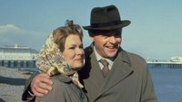
‘Zapatos italianos’ (‘Italienska skor’, 2006), la novela del autor sueco Henning Mankell, será convertida en guion por obra y gracia de Richard Cottan y en película por Kenneth Branagh, con el título inglés ‘Italian Shoes’. Los protagonistas de la adaptación podrían ser Anthony Hopkins y Judi Dench, quienes ya habían protagonizado juntos ‘La carta final’ (‘84 Charing Cross Road’, 1987). Pero muchas cosas pueden cambiar de aquí a que empiece a rodarse, cosa que no ocurrirá hasta finales del 2012 o en 2013, ya que Branagh debe dirigir antes ‘The Guernsey Literary and Potato Peel Society’ para la Fox y ‘The Boys in the Boat’ para los hnos. Weisntein.
El director y actor británico ha interpretado el papel protagonista en ‘Wallander‘, adaptación anglo hablada de la serie de televisión sueca del mismo título, que trasladaba a la pequeña pantalla las historias del famoso detective creado por Mankell.
En la novela ‘Zapatos italianos’, Fredrik Wellin, médico retirado, vive solo en una isla cercana a la costa sueca, hasta que la llegada de Harriet, un antiguo amor al que abandonó en el pasado, irrumpe en su monótono, pero buscado aislamiento para pedirle que cumpla la antigua promesa de juventud de llevarla a una laguna al norte del país, ahora que está gravemente enferma. Harriet trae consigo a Louise, una hija de ambos, de cuya existencia nada sabía Fredrik. Obligado, ahora, a asistir al lento final de Harriet y a crear unos vínculos paterno-filiales con quien, en realidad, es una desconocida, Fredrik iniciará un viaje hacia su propio dolor. Los errores del pasado sepultados en la soledad de la isla reavivan sus remordimientos. Entre ellos, el terrible secreto que lo alejó de la profesión y por el que decidió huir del mundo.
Si soy sincera, confesaré que la serie británica sobre ‘Wallander’ me pareció de gran calidad, pero no logró engancharme, por causa de su pausado ritmo. Una película con un “tempo” similar podría tener más sentido, ya que el cine se ve –o debería verse– con mayor atención y de forma más activa que la televisión. Incluso así, si Branagh en este caso hace algo ligeramente más movido, lo preferiré. El hecho de que no se trate de un thriller, sino de un drama muy trágico, no parece que vaya a ayudar mucho a que nos encontremos con un film entretenido. Pero quizá la profundidad psicológica que se gane a cambio valga la pena. Por una vez, el saber que aún nos falta mucho para poder verla no me preocupa en exceso.
Vía | Blogdecine Respuestas
Críticas a la carta | 'El show de Truman' de Peter Weir
Fri, 25 Nov 2011 09:32:10 GMT
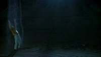
Cuando echamos la vista atrás y vemos que la Academia de Hollywood premió como mejor película de 1998 a ‘Shakespeare enamorado’ (‘Shakespeare in Love’, John Madden, 1998) nos entristecemos un poco al pensar que fue el año de películas como ‘Salvar al soldado Ryan’ (‘Saving Private Ryan’, Steven Spielberg) —una obra maestra más de su director—, ‘La delgada línea roja’ (‘The Thin Red Line’, Terrence Malick) —una gran obra que gana con el paso del tiempo—, ‘Un plan sencillo’ (‘A Simple Plan’, Sam Raimi) —gran film noir que supone la cima de su director—, y cómo no, ‘El show de Truman’, (‘The Truman Show’, Peter Weir), film que en cierto modo profetizaba sobre el poder de los reality shows, que se erigía como una de las mejores cintas de su estimable realizador, amén de ofrecer uno de los mejores papeles de Jim Carrey, hasta aquel entonces enfrascado en un buen número de personajes llenos de tics y muecas.
Que las película mereció más nominaciones —sólo consiguió las de mejor director, mejor actor secundario y mejor guión— es algo que ya se sabía entonces y que el paso del tiempo ha ido confirmando. Recientemente en la sección Respuestas, uno de nuestros lectores, el avispado luisss, fue aplaudido al resumirla con una sola palabra: vida. Pocas veces debo estar yo de acuerdo con un lector, pero es una palabra que la define a la perfección. ‘El show de Truman’ es, a las puertas del 2012, mucho más actual y revolucionaria de lo que fue en el momento de su estreno. Un canto a la vida y una crítica sin cuartel al poder de la televisión y la lucha por las audiencias, pero sobre todo un retrato del ser humano con todo lo bueno y lo malo que tenemos, que es mucho.
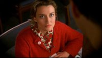
El concepto de ‘Gran hermano’, tan conocido en nuestro país gracias a un penoso programa de televisión que, temporada tras temporada, ha ido lobotomizando a los espectadores tontos, proviene de la famosa novela de George Orwell ‘1984’, publicada en 1949, y que posee dos adaptaciones cinematográficas, ‘1984’ (id, Michael Anderson, 1956) y ‘1984’ (‘Nineteen Eighty-Four’, Michael Rsdford, 1984). Dicho concepto no se utiliza en la película pero su influencia está más que clara. No obstante, la idea de una vida de ficción paralela a la real tampoco es original —en realidad ¿qué es original y qué no?—; hay precedentes en la serie de televisión ‘Twilight Zone’ y en alguna que otra novela de Philip K. Dick —aún sueño con una adaptación de ‘Time Out of Joint’, cuya premisa argumental es simple y llanamente impresionante—. Andrew Niccol recupera la idea base para su libreto, y la premisa que propone aterra por su verosimilitud. Una empresa adopta un bebé al que convertirá en el protagonista del reality show más exitoso de la historia, todo un mundo creado para él, siendo totalmente inconsciente de que vive una farsa.
Considero un gran acierto en el libreto de Niccol el hecho de que el espectador sepa enseguida que Truman vive en un enorme plató —tanto que puede apreciarse desde el espacio exterior al igual que la muralla china—, y no juegue al suspense presentándonos ese detalle al final como si de uno de esos giros dramáticos de guión se tratase. A cambio se opta por descubrir la terrible verdad al poco de su inicio —no obstante, ese foco que cae del cielo, y la angulación de la cámara, simulando monitores, son suficientes pistas al respecto—, e impactar en el espectador simplemente con la premisa, que por sí sola ya resulta aterradora y capta nuestro interés. El film critica la curiosidad humana, el vouyeur que todos llevamos dentro, y ahí estamos frente a la pantalla, interesándonos por la vida de un pobre desgraciado al que no se le ha dado la oportunidad de elegir. Hay que alabar el trabajo de síntesis realizado en el guión, pues hablamos de una película que dura poco más de hora y media, y aúna en poco tiempo mucha información hábilmente dosificada.
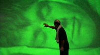
Y es un acierto esa opción de la supresión del suspense porque resulta prácticamente absurdo. La vida de Truman no tiene nada de especial, y me refiero a la vida ficticia que vive desde su nacimiento. Weir y Niccol ya logran que nos involucremos en la historia porque reconocemos nuestro lado vouyeur, y porque en el fondo deseamos que Truman consiga su objetivo, salir de esa mierda de mundo —dicho sea de paso que sirve como alegoría de un mundo ideal, aunque controlado por un ser superior, un dios muy particular, llamado Christof— y por ende alcanzar el amor, representado en el personaje al que da vida una encantadora Natascha McElhone. Es ése el único y poderoso punto de inflexión en la historia, y que en cierto modo habla de la propia naturaleza del ser humano al creer en algo más que lo que vemos, a aspirar a algo mejor y por coherencia a luchar por nuestros sueños, sean posibles o no. Cualquiera de nosotros puede ser Truman, nos identificamos con él y no necesitamos protagonizar un reality show para ello. Sus miedos y temores son los mismos que los nuestros y la falsedad del mundo que le rodea es la nuestra propia, el querer disfrutar con los placeres y sufrimiento de los demás, olvidándonos de lo principal: disfrutar y sufrir por nosotros mismos. De sentir.
Por primera vez en la carrera de Jim Carrey, su histrionismo le queda a la perfección. Su actuación va acorde con todo el mundo en el que vive y en el que prácticamente es un producto más de marketing. La evolución de su personaje queda perfectamente captada en una interpretación llena de matices en la que el actor demuestra que es mucho mejor de lo que nos había hecho creer con sus papeles de payaso. Atención a la forma de saludar todas las mañanas a sus vecinos, la misma que usa al final con reverencia incluida y de connotaciones muy diferentes. Pocas veces se nos ha erizado la piel como el momento de la libertad de Truman, porque representa la nuestra propia. Por el camino queda un personaje odioso a cargo de una excelente, como siempre, Laura Linney, una arrebatadora música de Burkhard von Dallwitz y Philip Glass, y un Ed Harris glorioso. Todos al servicio de una puesta en escena de Peter Weir a base de planos que encierran a sus personajes en perfecta consonancia con lo que se cuenta. La liberación de Truman se produce fuera de campo, cuando la película ha terminado y el controlable espectador busca otro canal. No es difícil imaginar que Truman se encontrará con el amor de su vida. Y habrá sido su elección, porque el amor es, como la vida, una cuestión de voluntad.
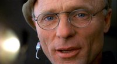
Estrenos de la semana | 25 de noviembre | Entre gatos anda el método
Fri, 25 Nov 2011 06:22:06 GMT
Esta semana tenemos un par de estrenos muy potentes. Uno de ellos por la calidad que le presuponemos, ‘Un método peligroso’, de Cronenberg, y el otro por su tirón comercial, ‘El gato con botas’, de DreamWorks. Y parece que la cosa va de gatos, porque también hay otro que desaparece, esta vez de la mano del argentino Carlos Sorín. Además de estas películas, se estrenan dos títulos alemanes de géneros muy diferentes y dos documentales españoles sobre temas sociales. Algún que otro estreno de interés más limitado completa una cartelera muy apretada que trata de aprovechar los últimos huecos antes del arrase de los estrenos navideños.
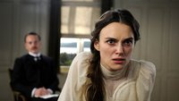
‘Un método peligroso’
Título original: ‘A dangerous method’ o ‘The talking cure’.
Dirigida por: David Cronenberg.
Intérpretes: Viggo Mortensen, Michael Fassbender, Keira Knightley, Vincent Cassel y Sarah Gadon.
Sinopsis: Al trío formado por el joven psiquiatra Carl Jung, su mentor Sigmund Freud y Sabina Spielrein se añade Otto Gross, un paciente libertino decidido a traspasar todos los límites. Esta exploración de la sensualidad, de la ambición y del engaño llega a su momento cumbre cuando Jung, Freud y Sabina se reúnen antes de separarse definitivamente y acabar cambiando la dirección del pensamiento moderno.
Qué podemos esperar: Mis expectativas están bastante altas con este estreno, que deseo que pueda entrar en la lista de lo mejor del año, que hasta ahora no está muy nutrida. Cuenta con casi todo lo necesario para que me resulte atractiva: la dirección de Cronenberg, el elemento psicológico más a tope que nunca, y un elenco insustituible. Así que espero que no me defraude.
Tráiler de ‘Un método peligroso’.
‘El gato con botas 3D’
Título original: ‘Puss in Boots’.
Dirigida por: Chris Miller.
Voces en V. O.: Antonio Banderas, Salma Hayek, Zach Galifianakis, Billy Bob Thornton, Amy Sedaris, Guillermo del Toro y Constance Marie.
Sinopsis: Mucho antes de que conociera a Shrek, el conocido espadachín, amante y fuera de la ley Gato con Botas se convierte en un héroe al emprender una aventura junto a la dura y espabilada Kitty Zarpassuaves y el astuto Humpty Dumpty para salvar a su pueblo. Complicándoles las cosas por el camino están los infames forajidos Jack y Jill, que harán cualquier cosa para que Gato y su banda no lo consigan.
Qué podemos esperar: Mi compañero Míkel Zorrilla opina que es digna, pero no demasiado original. No me invita a correr hasta la sala, como la anterior, pero tampoco la descarto. Si surge la posibilidad de verla, pues allí estaré. Parece que puede tener algunos buenos puntos humorísticos y es cierto que de todo lo que aportaba ‘Shrek’ el gato era lo más simpático. Es curioso que Banderas, que no se sabe doblar a sí mismo –lo ha reconocido él y permitido que se encargasen otros de su voz– haya sabido aportar tanta personalidad a este animal.
Tráiler de ‘El gato con botas’.
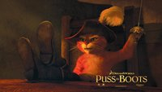
‘Premonición’
Título original: ‘Afterwards’.
Dirigida por: Gilles Bourdos.
Intérpretes: John Malkovich, Evangeline Lilly, Romain Duris, Pascale Bussières y Reece Thompson.
Sinopsis: A los ocho años, Nathan tuvo una experiencia cercana a la muerte e inexplicablemente volvió a la vida. Veinte años después, Nathan es un abogado brillante en Nueva York, herido tras un doloroso divorcio, que se refugia en su trabajo, lejos de su ex mujer Claire y la hija de ambos. Es en este momento cuando un misterioso doctor entra en su vida. El doctor Kay dice que puede prever cuándo algunas personas van a morir. Nathan descubrirá el motivo de su vuelta a la vida.
Qué podemos esperar: Lo que más me mosquea de esta cinta franco-alemana-canadiense de 2008, haya tardado tanto en estrenarse, a pesar de contar con tan buen elenco y de que el tráiler no tenga ninguna mala pinta.
‘Si no nosotros, ¿quién?’
Título original: ‘Wer wenn nicht wir’.
Dirigida por: Andres Veiel.
Intérpretes: August Diehl, Lena Lauzemis, Alexander Fehling, Thomas Thieme, Imogen Kogge, Michael Wittenbprn y Susanne Lothar.
Sinopsis: Basada en la historia verdadera, la película nos cuenta que Bernward y Gudrun viven una apasionada historia de amor. Muy sensibles a la inquietud de la época –principios de los sesenta en la sofocante atmósfera de la Alemania Occidental de provincias–, la fogosa pareja funda una editorial dedicada a publicar trabajos políticos controvertidos: “Si no somos nosotros, ¿quién? Si no es ahora, ¿cuándo?” Pero su descontento con el mundo que les rodea influye en su relación. A finales de los sesenta, Gudrun se une a la causa proviolenta del rebelde Andreas Baader, y Bernward arriesga su salud mental tomando drogas psicodélicas en un intento de escribir la novela que cambiará el mundo.
Qué podemos esperar: Juan Luis Caviaro encontró que tenía momentos poderosos, dentro de un conjunto no del todo regular. El punto de partida es más que interesante y está muy bien que se haya elegido a una pareja para reflejar esas diferencias en un conflicto personal que afecte a los personajes. Habrá que ver cómo se desarrolla.
‘Todo un hombre’
Título original: What a Man!
Dirigida por: Matthias Schweighöfer.
Intérpretes: Matthias Schweighöfer, Sibel Kekilli, Elyas M’Barek, Thomas Kretschmann, Milan Peschel y Mavie Hörbiger.
Sinopsis: Cuando su imponente novia le abandona por su vecino, mucho más viril que él, Alex, un joven algo blandengue, se embarca en un proceso de autoeducación para convertirse en un hombre y encontrar el amor verdadero. Mientras recibe los consejos de su amiga Nele acerca de las relaciones sentimentales, su otro amigo, Okke, un auténtico machote, le da lecciones sobre cómo llegar a ser un verdadero hombre.
Qué podemos esperar: Debo reconocer que este tipo de cosas, aunque pueda olerme que vayan a ser malas, a priori me atraen un poco. Entre la comicidad que pueda surgir de los enredos y confusiones y el componente romántico que prometen, ya casi me tienen comprada. No iría al cine a ver una comedia como esta, pero como opción para alquilar en DVD y ver una tarde de fin de semana, la tendría en cuenta.
‘El gato desaparece’
Dirigida por: Carlos Sorín.
Intérpretes: Luis Luque, Beatriz Spelzini, María Abadi y Norma Argentina.
Sinopsis: Beatriz va a buscar a Luis, su marido, a la clínica neuropsiquiátrica donde ha estado internado a raíz de un brote psicótico inesperado y violento. A su alegría se suma la inquietud que le provoca saber si Luis es, después de haber estado internado, realmente el mismo, si aquel oscuro episodio puede volver a repetirse. El retorno a la vida cotidiana no será fácil.
Qué podemos esperar: Aunque en general abrazo la llegada de algún estreno argentino con mucha alegría, no se puede decir que el estilo casi documental de films anteriores de Carlos Sorín sea el que más va con mis gustos a la hora de elegir películas. Pero la historia que se propone aquí parece que podría tener una gran fuerza dramática y algo de misterio. En este caso, da la sensación de que podríamos estar más cerca de algo de terror psicológico que del costumbrismo previo.
‘La puerta de no retorno’
Dirigida por: Santiago A. Zannou.
Sinopsis: Alphonse vende todo tipo de cachivaches en los mercadillos de Madrid. Casi 40 años en España… esperando a que le llegue un golpe de suerte, gestando poco a poco un fracaso que nunca ha podido o querido admitir. Ya viejo, se está quedando ciego y más que nunca tiene la necesidad de hacer las paces con su pasado y afrontar sus errores. Siente que es hora de volver a África, regresar al punto de partida, a su tierra natal en busca del reencuentro, del perdón, de la reconciliación… con su familia y también consigo mismo.
Qué podemos esperar: El aspecto es espectacular, con una fotografía preciosa y una gran historia que contar. Podríamos encontrarnos ante un ganador de premios Goya. ‘El truco del manco’, del mismo director, se llevó tres.
‘Mercado de futuros’
Dirigida por:Mercedes Álvarez.
Sinopsis: Documental que intenta analizar la fiebre del mercado inmobiliario y la virtualización del espacio urbano.
Qué podemos esperar: El tema inmobiliario, principal motive de que estemos en la situación en la que estamos, me parece que merece, como mínimo, algún estudio que otro. Sin embargo, no estoy muy segura de querer ver este documental para cabrearme aún más sobre la situación.
‘La chica más feliz del mundo’
Título original: Cea mai fericita fata din lume.
Dirigida por: Radu Jude.
Intérpretes: Vasile Muraru (Sr. Fratila), Andreaa Bosneag (Delia Cristina Fratila), Violeta Haret (Sra. Fratila), Doru Catanescu (Sr. Arvunescu), Alexandru Georgescu (cliente), Diana Gheorghian, Bogdan Marhodin (Viorel).
Sinopsis: Delia, una adolescente que vive en un pequeño pueblo de Rumanía, acaba de ganar un automóvil en un concurso. Esto motiva una discusión con sus padres en torno a lo que van a hacer con el coche nuevo: sus padres quieren venderlo y así solucionar los problemas familiares; ella, en cambio, quiere quedárselo para presumir ante sus amigos y compañeros. Lo que al principio parecía un golpe de suerte, se convierte para Delia en una situación dolorosa y extrema en la que tendrá que decidir si antepone sus deseos personales a las necesidades de su familia.
Qué podemos esperar: Una película rumana de 2009 que transcurre durante casi todo su metraje en la grabación de un anuncio publicitario y que no acierto a dilucidar si es drama o tragicomedia… lo cierto es que no me atrae lo más mínimo, pero está claro que estoy aventurando esta impresión y que no tengo datos para juzgar la cinta, que quizá sea grandiosa.
‘Una canción’
Dirigida por: Inmaculada Hoces.
Intérpretes: Inmaculada Hoces, Miguel Molina y Jorge Cabrera.
Sinopsis: María, una abogadamadura, se queda en paro por su honestidad, pero no desespera y, mientras busca trabajo, escribe lo que importa en un cuadernito. Conoce a dos hombres, Manuel, un músico que sobrevive como puede, con el que comparte sus escritos, y Santiago, un directivo de una discográfica, muy comprometido con la protección de los autores del desastre de las descargas ilegales en internet. Ambos le influyen, y se ve abocada a asumir nuevos retos donde, una vez más, tendrá que poner a prueba su integridad.
Qué podemos esperar: El trailer da la sensación de ser demasiado amateur y esos diálogos que exponen claramente la tesis de la guionista. No da la impresión de que las interpretaciones sean muy naturales y parece difícil ver cómo engancharse con la historia. Pero quizá esta directora merezca una oportunidad.
David Cronenberg: 'Una historia de violencia', la naturaleza humana
Thu, 24 Nov 2011 20:00:42 GMT
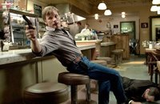
Recuerdo el momento en el que supe que estabas enamorada de mí. Lo vi en tus ojos. Todavía puedo verlo…
A falta de solo un día para el estreno en España de ‘Un método peligroso’ (‘A Dangerous Method’), nos toca hablar en este especial dedicado a David Cronenberg de su primera colaboración con el actor Viggo Mortensen. Después de ‘Spider’ (2002), el realizador canadiense tenía entre manos un nuevo guion original titulado ‘Painkillers’ que pintaba muy bien (centrada en un artista y la resistencia al dolor), pero en algún momento dejó de interesarle lo que estaba creando y lo abandonó. En su lugar, optó por hacerse cargo de la adaptación a la gran pantalla del cómic o novela gráfica ‘Una historia de violencia’ (‘A History of Violence’) de John Wagner y Vince Locke. He leído que Cronenberg aceptó el proyecto en parte para compensar el no haber cobrado nada por su anterior trabajo, y puede que así fuera, al fin y al cabo dirigir es un trabajo y este hombre no vive del cuento, pero, de nuevo, se trata de una película que encaja perfectamente en su coherente carrera, no es obra aparte sin conexión con las demás y que podría haber realizado cualquiera. Queda patente su interés por el texto que tiene entre manos (violencia, sexo, identidad…) y se percibe su mirada, su idea del cine.
Según el director canadiense, el guion que le ofrecieron (escrito por John Olson) llamó su atención en primer lugar por toda la iconografía y mitología vinculada a Estados Unidos, por esos elementos que uno espera encontrar en la típica historia norteamericana; elementos con los que Croneberg podía jugar y pervertir para tratar algo mucho más fascinante que un simple relato violento de redención. Tenemos el pequeño pueblo aislado y tranquilo, los buenos vecinos, los valores familiares, las recompensas del trabajo duro, el sheriff, el bar, los forasteros indeseables, los tiroteos… Podría tratarse de un western, el género estadounidense por excelencia. O una de mafiosos, con el gánster elegantemente vestido amenazando la paz del héroe. A ratos, ‘Una historia de violencia’ es eso. Por un lado tenemos a los Stall, una familia ejemplar que está viviendo el sueño americano (el inicio empalagoso recuerda al de ‘La zona muerta’), y que representa el amor y todo lo bueno, y por otro lado están los villanos, unos monstruos que solo entienden de robar, violar y matar; tenemos el conflicto planteado y solo queda esperar a que el héroe lo resuelva, y todos contentos con nuestra dosis de violencia “justa”. Pero Cronenberg no quiere hablar de buenos y malos, de héroes y villanos; su objetivo es la naturaleza humana, la oscuridad y la luz que hay en cada uno de nosotros.
Que Cronenberg adapte un relato ajeno no significa que no se haya implicado en el guion. Lo hace, y no solo en la etapa de pre-produción, también lo modifica durante el rodaje y durante la post-producción. El que lea el cómic descubrirá que la adaptación cinematográfica comienza de manera similar, con un hombre corriente que despierta su alter ego violento para detener a unos criminales, pero difiere mucho en el desarrollo y el desenlace; a Cronenberg no le interesaba el espectáculo violento, sino retratar la violencia innata al ser humano, y cómo podemos convivir con ella. En este sentido es muy significativo el final de la película, un cierre cargado de significado y emoción, de lo mejor que ha rodado el canadiense. Recomiendo a todos los lectores interesados en saber más sobre esta película o sobre el modo en el que trabaja este director, que echen un vistazo al interesante contenido extra incluido en la edición doméstica de ‘Una historia de violencia’ (2005); aparte de los audio-comentarios del realizador, o una escena eliminada con Mortensen y Ed Harris (una sangrienta pesadilla que habría perjudicado el conjunto), hay un jugoso “making of” donde se ve cómo el director afronta el rodaje de una serie de escenas, siempre buscando la colaboración del equipo técnico y artístico que le rodea, dispuesto a escuchar a todo el que tenga una idea que pueda enriquecer la película.
Cronenberg no usa “storyboards” y acude al set sin una idea preestablecida de cómo va a rodar la escena. Lo decide in situ, con el equipo. Ensaya con los actores en el escenario, lo más cerca de la ficción, permitiendo que se sientan cómodos con sus personajes, sus frases, su ropa, los objetos que le rodean y el lugar dónde tienen que moverse. Las improvisaciones están permitidas y ningún detalle es irrelevante para Cronenberg, todo lo que el reparto pueda aportar a sus personajes es bienvenido (Greg Bryk y Stephen McHattie inventaron un pasado para los dos matones que encarnan, aunque nunca llega a oídos del espectador). Este método de trabajo, bien entendido y ejecutado, tiene un excelente resultado en la pantalla, todo resulta más cercano y auténtico. Asimismo, cabe señalar que, desde ‘Crash’, el realizador muestra a los actores las escenas de sexo o con desnudos que ha filmado, con la intención de transmitirles confianza, deja que vean qué queda dentro del plano, cómo se ven sus cuerpos, cómo resultan sus movimientos, con la esperanza de que así darán lo mejor de sí mismos. Dos de las escenas más recordadas de ‘Una historia de violencia’ son precisamente las sexuales. Las incluyó Cronenberg, no estaban en el guion de Olson. Y el motivo es que si estaban plasmando la faceta más salvaje o animal del hombre, era imprescindible abarcar la sexualidad.
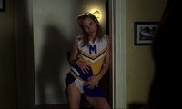
Normalmente, las escenas de sexo en las películas son gratuitas, una concesión al espectador o una manera de lucir a los actores con intenciones puramente comerciales. Las películas de Cronenberg no suelen durar más de una hora y media, no tiene piedad eliminando metraje si considera que debilita o desestabiliza el conjunto, así que si incluye desnudos o acción sexual puedes estar seguro que hay un motivo. Efectivamente, las dos situaciones en las que los personajes de Mortensen y Maria Bello se relacionan sexualmente son relevantes, aportan información. Atención sobre todo al cambio que se produce en la segunda escena, cuando la mujer ya ha descubierto la verdad sobre el pasado de su marido (no resultaría tan convincente ni tan sorprendente si no les hubiéramos visto antes en la cama). Es importante apuntar que en esa escena se une la violencia con el sexo, que es también una parte innata del ser humano; Cronenberg considera que en los actos violentos suele haber excitación sexual, y que el sexo es en esencia un acto violento consentido por las dos partes, un enfoque que encaja con la visión del hombre como un animal racional o con conciencia (y choca con ideas religiosas). También es muy interesante porque refleja una lucha de poder entre el hombre y la mujer. Ojo al final de la escena, a cómo termina cada uno.
Durante la presentación de la película en el festival de Cannes, un periodista comentó a Cronenberg que le había sorprendido (negativamente) cómo la gente aplaudía entusiasmada tras las escenas violentas. Y el realizador contestó, con la tranquilidad y la sinceridad que le caracterizan, que ésa era justo la respuesta que él buscaba cuando las filmó. A la mayoría puede que le resulte inconcebible la idea pero Cronenberg sabe y demuestra que el ser humano disfruta con la violencia; lo mismo que disfruta del sexo. En este sentido, su película es un puñetazo de verdad en el estómago de la hipocresía. No hay más que ver las películas, las series o los videojuegos que se hacen y triunfan, o el mismo pasado del ser humano, toda esa Historia de violencia. ¿Cómo es posible que aún haya tanta gente que mire hacia otro lado, y crea en fantasías como el cielo y el infierno? Cronenberg apuesta por asumir lo que somos, con el objetivo de poder controlarlo, no en ensalzar la violencia o darle un sentido positivo, como suele hacer el cine industrial o comercial. Aquí no hay un héroe de Hollywood que tras matar a los malos vuelve a casa satisfecho y entre aplausos, porque ha devuelto la paz, con sangre en las manos.
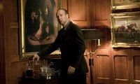
Como ocurre en películas de Sam Peckinpah o Clint Eastwood, matar puede llegar a ser un acto inevitable, pero no deja de ser un acto brutal, sucio e indeseable, perturbador, que puede transformarse en una especie de potente virus y acabar con todo lo que se ha construido humana y pacientemente. Llama la atención cómo Cronenberg representa las escenas violentas de una forma similar a los accidentes de tráfico que aparecen en sus otras películas, buscando el realismo en la medida de lo posible y no el espectáculo visual (prohibida la cámara lenta); son rápidas y contundentes, destructivas (los rostros desfigurados), desagradables y definitivas en la mayoría de las ocasiones, sin vuelta atrás. Pero no es este retrato descarnado del ser humano un pozo de tinieblas, sangre y pesimismo, Cronenberg confía en la humanidad, cree que hay esperanza. Y en definitiva, ‘Una historia de violencia’ es una de las películas más sentimentales de su director, además de una de las más accesibles para el gran público, una meta necesaria para una producción de 30 millones de dólares (el mayor presupuesto en la carrera del realizador).
‘Una historia de violencia’ no fue lo que se dice un éxito de taquilla, pero funcionó bien y en general recibió elogios tanto de la crítica como del público; William Hurt (que apenas interviene en diez minutos) y Olson fueron candidatos al Oscar. Cronenberg quedó encantado con la experiencia y encontró en Mortensen a un extraordinario aliado delante de la cámara, repitiendo de nuevo con él en su siguiente proyecto, ‘Promesas del este’ (‘Eastern Promises’, 2007). Como ya hay varias críticas de esa película en el blog (incluida una mía, escrita con la emoción que se siente tras un único y reciente visionado), mi próximo artículo dedicado a la carrera de Cronenberg estará centrado en su nuevo y esperado trabajo, el que llega mañana a nuestras salas, antes de dar por concluido este especial que, reconozco, ha durado más tiempo del previsto.
- Críticas de ‘Promesas del este’:
‘Promesas del este’, aún existe el buen cine
‘Promesas del este’, otra buena película de Cronenberg
‘Promesas del Este’, otra historia de violencia
- Otra crítica de ‘Una historia de violencia’:
‘Una Historia de Violencia’, Cronenberg firma su mejor film
- Especial David Cronenberg en Blogdecine:
‘Stereo’
‘Crimes of the Future’
‘Vinieron de dentro de…’
‘Rabia’
‘Fast Company’
‘Cromosoma 3’
‘Scanners… su solo pensamiento podía matar’
‘Videodrome’
‘La zona muerta’
‘La mosca’
‘Inseparables’
‘El almuerzo desnudo’
‘M. Butterfly’
‘Crash’
‘eXistenZ’
‘Spider’
'In the Land of Blood and Honey', cartel y tráiler del debut de Angelina Jolie como directora
Thu, 24 Nov 2011 09:50:59 GMT
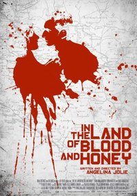
GK Films y FilmDistrict han lanzado ya el cartel de ‘In the Land of Blood and Honey’, la primera película dirigida por la actriz Angelina Jolie. Un póster llamativo y que se sale de lo corriente, aunque no es de extrañar teniendo en cuenta que la estrella de esta producción es la persona encargada de la puesta en escena, y no los actores, desconocidos para el público occidental (no tendría mucho sentido el habitual recurso de las cabezas flotantes). Os dejo también más abajo el tráiler subtitulado al castellano, que lleva un tiempo circulando por la red. La película se estrena el próximo 23 de diciembre en Estados Unidos, por el momento no hay fecha para España.
Jolie también produce y firma el guion de ‘In the Land of Blood and Honey’ (‘En la tierra de sangre y miel’), un drama bélico y romántico protagonizado por Zana Marjanović, Goran Kostić, Rade Šerbedžija, Vanesa Glodjo y Nikola Djurićko, que rodaron la película en su idioma nativo y en inglés, para facilitar la venta internacional del film. En cuanto a la historia, está ambientada en la década de los 90 y se centra en Danijel y Ajla, dos personas separadas por un brutal conflicto étnico. Danijel y Ajla se conocieron antes de la guerra y se enamoraron, pero ahora ella es una prisionera bosnia en un campo del ejército serbio al que él pertenece.
PD: Hay fotos de Brad Pitt ayudando a Jolie en el set, y por ahí he leído que quiere dejar de actuar a los 50, así que no me extrañaría nada que anunciara pronto su primer proyecto como director.
Vía | Comingsoon
'Las aventuras de Tintín: El secreto del unicornio', el retorno a la aventura clásica
Wed, 23 Nov 2011 17:17:01 GMT

‘Las aventuras de tintín: El secreto del unicornio’ (‘The Adventures of Tintim’, Steven Spielberg, 2011) ha sido un estruendoso éxito en Europa, donde se ha estrenado dos meses antes que en su país de origen, al que llegará todavía dentro de un mes. Es evidente que Steven Spielberg y Peter Jackson han querido comprobar los resultados taquilleros en el continente donde el personaje de Tintín, creado por Hergé, tiene una mayor popularidad. El éxito era lógico, si tenemos en cuenta que el famoso personaje llevaba esperando una adaptación cinematográfica desde que Spielberg hizo ‘En busca del arca perdida’ (‘Raiders of the Lost Ark’, 1981), que fue comparada con las aventuras del joven reportero metido a detective aventurero. A ello hay que sumar que la película la dirige el director más popular de todos los tiempos, y también que es un film de animación, género de gran aceptación en los últimos años.
El resultado está a la altura de las expectativas, tratándose de un cineasta como el director de ‘Tiburón’ (‘Jaws’, 1975), ya no sólo porque demuestra una vez más que sigue siendo uno de los mejores narradores que ha dado el séptimo arte, sino porque su primera incursión en este tipo de cine ha resultado mejor de lo que muchos esperábamos. Debo reconocer que de todos los proyectos en los que se ha metido Spielberg, éste era el que menos me ha interesado a priori, pero una vez metido en materia, la magia se ha apoderado de la función. Y por magia me refiero a esa señal perfectamente identificable, pero prácticamente indefinible, que viste a las grandes películas, aquellas capaces de transportarnos a otro mundo, tal y como ocurre con el presente film, que sin ser una obra maestra —tampoco lo necesita— supone uno de los mejores entretenimientos del año.
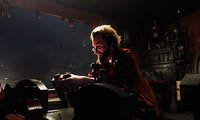
Spielberg ha sabido cómo enfrentarse a la ardua tarea de adaptar un personaje como Tintín. Aunque durante mucho tiempo se especuló con la posibilidad de una película en imagen real, no hay duda de que la opción finalmente elegida ha sido la mejor. La captura de movimiento como técnica, y una animación que recuerda a los originales de Hergé con la salvedad de que ahora estamos en el demandado mundo de la 3D y hay que adaptarse a ello. Una adaptación en la que evidentemente se apartan de la llamada línea clara que caracteriza las novelas gráficas de Tintín, y Spielberg se la juega tomando fragmentos de distintas aventuras unificándolos en uno solo, con lo que lleva al personaje a su terreno. Esto sin duda es lo que más habrá cabreado a los expertos o fans en Tintín, entre los que no me encuentro.
Pero como el arte siempre es cuestión de perspectiva, lo que sí soy es un fan del señor Spielberg —a Peter Jackson le tengo el justo aprecio por haber realizado una maravillosa trilogía—, y como tal debo considerarme más que satisfecho con ‘Las aventures de Tintín: El secreto del unicornio’, que nos devuelve a un Spielberg lleno de energía. La aventura, en el sentido más clásico del término, vuelve a apoderarse de la platea en pleno 2011. El director de ‘A.I.’ plantea su film como si de una nueva aventura de Indiana Jones se tratase, algo muy lógico dadas las comparaciones que el mismo Hergé hizo entre el arqueólogo y el reportero. Así, Spielberg maneja muy bien el tempo y el ritmo, y con una justa y concisa presentación de personajes y situaciones va directo al grano como nunca.
Tanto Juan Luis como Mikel, mis compañeros en estas páginas, consideran que el trabajo de Spielberg se ha quedado a medias, que podría haber dado más de sí. No estoy del todo de acuerdo, si acaso hay cierto distanciamiento con los personajes por aquello de querer aspirar al realismo, algo que considero un error —Pixar y Ghibli son las pruebas palpables de que tal cosa no es necesaria, de que se puede empatar con personajes animados—, pero la película es un completo torrente de emoción, una montaña rusa de lo más efectiva, que no ofrece ni el más mínimo respiro al espectador, exactamente igual que en las cuatro películas sobre Indiana Jones. Y al igual que en ellas, Spielberg da una verdadera lección de lo que significa espectáculo, y no aparatosidad, y de cómo enlazar set piece tras set piece sin atropellamiento alguno. Si hay alguna que destaca sobre las demás es la ya famosa persecución en plano secuencia, con una planificación prodigiosa, y que muestra claramente lo que puede hacerse en el cine de animación.
Si bien Tintín no posee un carisma arrebatador —la misma impresión que me he llevado en los cómics— sí lo poseen dos personajes secundarios. Me refiero a Milú y a Haddock, quien revela una vez más a Andy Serkis como un genio en lo que hace. Con ambos personajes Spielberg demuestra su talento para la comedia, convirtiéndolos en las verdaderas estrellas de la función, por encima de Tintín, en cuyos rasgos además podemos reconocer a Jamie Bell en el que probablemente sea el mejor trabajo de su carrera. El resto de personajes no desmerecen, aunque no gozan de tanto lucimiento como los centrales, un precio a pagar en una película tan llena de acción. Porque si Spielberg se apodera con todo respeto del personaje de Hergé, también es capaz de moverse en otros terrenos de la aventura como ese flashback sobre el antepasado de Haddock, y que deja en evidencia —y en bragas, valga la vulgaridad— a la saga de ‘Piratas del caribe’. Otra lección de este hombre, que aún diciendo todo lo que ha dicho en el séptimo arte a través de sus películas, aún le queda mucho por decir. Ahora a esperar para ver si Peter Jackson es capaz de superar lo visto, y no me refiero a la técnica.
'Prometheus', nuevas imágenes de la precuela de 'Alien'
Wed, 23 Nov 2011 09:59:19 GMT
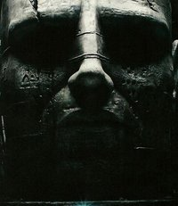
Siempre me sorprende cuando algún estudio de Hollywood decide hacer una precuela de una película de hace ya varias décadas, y es que no termino de ver el interés en contarnos algo que, en según qué caso, ya sabemos cómo va a acabar. ¿Acaso no estaba claro lo que iba a suceder al final de la reciente ‘La cosa’ o, aunque en este caso fuese una precuela del remake y no de la original, que la familia chiflada de ‘La matanza de Texas: El origen’ iban a salirse con la suya? Además, siempre queda la sensación de que en realidad estamos viendo un remake encubierto y la sensación de estar siendo estafados siempre está ahí en mayor o menor medida. Así fue como recibí de primeras la noticia de que iba a hacerse ‘Prometheus’, la cual encima iba a ser dirigida por un director novato en el mundo del cine. Mucha desconfianza.
El proyecto fue avanzando y rápidamente Ridley Scott, director de ‘Alien, el octavo pasajero’, tomó las riendas por petición de la propia productora. Luego fueron sumándose al reparto actores como Charlize Theron, Guy Pearce, Idris Elba, Michael Fassbender, Noomi Rapace o Patrick Wilson. También se confirmó que ‘Prometheus’ no va a ser una precuela en el sentido más estricto, pero sí que sus minutos finales nos traerán a la memoria ‘Alien, el octavo pasajero’. De su argumento apenas se sabe que girará sobre el intento de descubrir el origen de nuestro planeta, lo cual llevará a los protagonistas a los confines más oscuros del universo. Generalidades que, salvo un sugestivo punto de partida, poco nos dejan entrever sobre lo que la película, de la que han llegado a rodarse varias escenas en España, va a ofrecernos. Por ahora, tenemos que contentarnos con una serie de nuevas imágenes que han aparecido en el último número de la revista americana Entertainment Weekly que añadir a las que pudimos ver en Blogdecine hace ya unos meses.
Galería de fotos
(Haz click en una imagen para ampliarla)
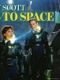
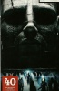
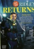
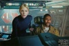
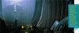
PD: Se filtró hace poco un vídeo a muy baja calidad con imágenes del tráiler de la película. Fox ya se ha encargado de pedir que lo retiren, pero seguramente acabe filtrándose de nuevo. Estaremos atentos a ello para haceros más llevadera la espera hasta el 8 de Junio del 2012, que es cuando está fijado el estreno de ‘Prometheus’ estreno en España.
Vía | Bloody Disgusting.
'Arrugas', secuencia e imágenes de la película española que podría ganar el Oscar
Tue, 22 Nov 2011 21:23:05 GMT
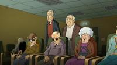
Cuando hablamos de tebeos españoles lo primero que viene a la mente de la gran mayoría es Mortadelo y Filemón, y es normal dado el enorme (y en su momento merecido) éxito de los personajes de Ibáñez. Si se tira un poco más de la manta seguro que saldrían mencionados otros personajes como Zipi y Zape, Anacleto, Carpanta, El botones Sacarino o ya viniéndonos a creaciones más modernas quizá lo más destacable a nivel de ventas y longevidad en número de aventuras sea ‘Fanhunter’ de Cels Piñol. No obstante, son varias las obras con un menor eco popular que se han publicado en los últimos años. Una de ellas es ‘Arrugas’ de Paco Roca, una sensible creación sobre el Alzheimer en la tercera edad que consiguió el premio nacional de cómic en el 2008. Sin embargo, y pese a que ha vendido una buena cantidad de copias, ‘Arrugas’ está lejos de ser un tebeo que la gran mayoría conozca.
‘Arrugas’, de la cual ya os comenté hace unos días que está entre las preseleccionadas para ser nominada a mejor película de animación en los Oscar, cuenta la historia de Emilio, un antiguo director bancario que padece Alzheimer que es ingresado en una residencia por su hijo. Allí traba amistad con Miguel, su compañero de habitación que le introduce en su nuevo mundo y, de paso, hacen alguna pillería juntos. Además, conoceremos a otros habitantes del lugar, cada uno de ellos con una pequeña historia que ofrecernos. Todo esto está perfectamente retratado en el cómic sin incidir demasiado en los componentes lacrimógenos de la historia, pero tampoco adulterándolos obviando la gravedad del Alzheimer. ‘Arrugas’ sencillamente consigue un equilibrio casi perfecto que lo convierte en uno de los mejores cómics (para así englobar también obras extranjeras) de los últimos años. Eso sí, yo tenía mis dudas cuando se confirmó que iba a dar el salto a la gran pantalla en forma de película de animación.
El responsable de acometer este aventura es Ignacio Ferreras, cuyo trabajo más reciente fue su participación como animador en ‘El ilusionista’, último film hasta la fecha de Sylvain Chomet, también director de ‘Bienvenidos a Belleville’. Su primer gran acierto fue optar por un tipo de animación más sencillo (pero no por ello menos efectivo), en el que la visualidad de las imágenes no corra el riesgo de comerse a la propia historia. Y es que en ‘Arrugas’ no serviría para gran cosa la adición del 3D ni otras tecnologías dedicadas a potenciar la belleza de lo que vemos. Y se ve que no soy el único que piensa eso, ya que el propio autor ha alabado el resultado final y también recibió muy buenas críticas de medios de todo el mundo tras su presentación en el pasado Festival de San Sebastián.
Creo que la secuencia que ahora podemos ver capta muy bien el espíritu de la obra de Paco Roca y es una buena muestra sobre lo que podemos esperar de ‘Arrugas’. Yo al menos ya tengo muchas esperanzas en que salga una muy buena película que quite aún más la razón a aquellos que critican tanto al cine español diciendo que siempre se hace lo mismo. ‘Arrugas’ es un buen ejemplo de que no es el caso aunque luego puede que no sea una película tan redonda como yo estoy deseando. ¿Qué opináis vosotros? ¿Acabará colándose entre las nominadas al Oscar de mejor película de animación?
Galería de fotos
(Haz click en una imagen para ampliarla)
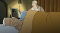
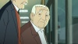
PD: Os dejo también un pequeño vídeo sobre la grabación de la banda sonora de la película. Por cierto, el estreno en España de ‘Arrugas’ está inicialmente previsto para Febrero del 2012, aunque aún se desconoce la fecha exacta.
'El caballero oscuro: La leyenda renace', nuevas imágenes de Batman y Bane
Tue, 22 Nov 2011 11:36:42 GMT
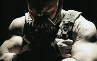
Es un terrorista tanto en mentalidad como en brutalidad. (Tom Hardy sobre Bane)
Solo cuatro meses después del lanzamiento del primer tráiler, ya han aparecido en Internet nuevas imágenes oficiales de ‘El caballero oscuro: La leyenda renace’ (‘The Dark Knight Rises’) gracias a una exclusiva de la revista Empire. En concreto, se han publicado siete nuevas imágenes, tres portadas y cuatro fotogramas de la película, todas centradas en Batman (Christian Bale) y su nuevo enemigo, Bane (Tom Hardy). Personalmente me ha llamado mucho la atención la foto de Bane mostrando un retrato de Harvey Dent (Aaron Eckhart) subido a lo que parece ser su propio “batmóvil”. Lo cierto es que impone mucho este personaje, el héroe murciélago lo va a pasar mal…
Recordemos que ‘El caballero oscuro: La leyenda renace’ llegará a los cines el próximo 20 de julio y que concluirá la historia iniciada hace seis años en ‘Batman Begins’. Christopher Nolan vuelve a ocuparse del guion (coescrito junto a su hermano Jonathan) y de la dirección, teniendo a sus órdenes un impresionante reparto encabezado por Bale, Hardy, Michael Caine, Gary Oldman, Morgan Freeman, Anne Hathaway, Joseph Gordon-Levitt, Marion Cotillard, Juno Temple y Nestor Carbonell. Nolan ha anunciado que la historia de la película tiene lugar ocho años después de los acontecimientos de ‘El caballero oscuro’ (‘The Dark Knight’, 2008), y que la primera secuencia es un prólogo de entre seis y siete minutos que muestra el origen de Bane. Una secuencia que podrá verse en los cines IMAX de Estados Unidos a partir del próximo 16 de diciembre, entre los avances de la cuarta entrega de ‘Misión Imposible’. Supongo que poco después se subirá a la red y los más impacientes podremos verla…
Galería de fotos
(Haz click en una imagen para ampliarla)
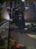
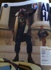
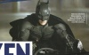
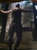
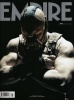
PD: La pose de Bane en la última imagen me ha recordado a cierta escena de ‘Superstar’ (1999).
Vía | Comingsoon
Dominic Cooper y Amber Heard en 'Motor City', de Albert Hughes
Tue, 22 Nov 2011 07:44:32 GMT

Albert Hughes, co-director, junto con su hermano Allen, de ‘Desde el infierno’ (‘From Hell’, 2001) y ‘El libro de Eli’ (‘The Book Of Eli’, 2010), está preparando en solitario ‘Motor City’, la historia de un un ladrón de poca monta que cumple condena y, tras ser puesto en libertad, comienza una cruzada vengativa contra aquellos que lo incriminaron injustamente y se ocuparon de que acabara entre rejas.
Los protagonistas de esta cinta serán Dominic Cooper en el papel protagonista, que previamente le había sido ofrecido a Chris Evans, y Amber Heard, como principal femenina. Cooper, de quien recientemente comentamos que había protagonizado ‘The Devil’s Double’, estará esta semana en cartelera con ‘My Week With Marilyn’ (2011) y dentro de poco en ‘Abraham Lincoln: cazavampiros’ (‘Abraham Lincoln: Vampire Hunter’, 2012). Heard, por su parte, había estado en ‘Zombieland’, aparece en ‘The Rum Diary’, junto con Johnny Depp, y en la serie ‘The Playboy Club’. Su próxima película, ‘Syrup’, está en prosproducción y se estrenará en 2012.
El guion, de Chad St. John, acabó formando parte de la “Lista Negra” de 2009, es decir, de una relación de los mejores guiones del año que no han sido elegidos por ninguna productora para ver la luz. Después de eso, se comenzó con un preproducción, que ya lleva un tiempo preparándose. Joel Silver se está encargando de la producción, con su empresa Dark Castle.
La historia de ‘Motor City’, nombre que se da tradicionalmente a Detroit, no me suena novedosa en absoluto, sino todo lo contrario. Sin embargo, se cuenta que en la película sólo se oirán un par de frases de diálogo. Greg Silverman, de Warner Bros. le propuso a St. John, a quien ya le había comprado su primer guion, ‘The Days Before’, que escribiese un guion mudo sobre venganza. El guionista, en un principio recibió el reto con entusiasmo y, posteriormente, se dio cabezazos contra la pared al darse cuenta de lo que había aceptado. Aunque lo terminó mudo, cuando Dark Castle entró en la producción, le pidieron una nueva versión con algo de diálogo y es posible que lo que se llegue a rodar sea una combinación de ambas. St. John también ha vendido un próximo guion, ‘The Further Adventures Of Doc Holliday’, una especie de ‘Piratas del Caribe’, a Lorenzo Bonaventura y Paramount.
Vía | Deadline.
'Happy Feet 2', cartel español y tráiler definitivo
Mon, 21 Nov 2011 19:28:33 GMT
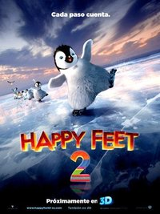
Una de las víctimas comerciales de los hambrientos vampiros amorosos ha sido la segunda parte de ‘Happy Feet’ (2006). La película animada de George Miller se estrenó el pasado viernes en Estados Unidos como la gran propuesta familiar de la semana, pero solo recaudó unos decepcionantes 22 millones de dólares, prácticamente la mitad de lo que cosechó la primera entrega, que además no contaba con salas en 3D. ¿Una mala fecha o una secuela que no interesaba? Ya veremos, ‘El gato con botas’ (‘Puss in Boots’) tampoco logró un buen estreno pero se mantuvo fuerte en las semanas siguientes y ya acumula más de 120 millones. ‘Happy Feet 2’ llegará a los cines españoles el próximo 2 de diciembre. Me entusiasmó la primera parte, la encontré divertida y emocionante, y en principio me apuntaría a ver la segunda, pero ni el teaser ni el tráiler que os dejo en esta entrada me han convencido, parece que han apostado por una película más infantil y tonta. ¿Qué os parece a vosotros, vais a verla?
Miller y Warren Coleman firman el guion de ‘Happy Feet 2’, cuyos personajes cuentan con las voces originales de Elijah Wood, Robin Williams, Hugo Weaving, Matt Damon, Brad Pitt, Common, Pink, Anthony LaPaglia y Hank Azaria, entre otros. Un gancho para el público que (de momento) no ha demostrado ser muy eficaz. La trama de la película se centra en el hijo de Mumble, Erik, que tiene pánico a bailar. El pequeño escapa de su hogar y se encuentra con el poderoso Sven, un pingüino que puede… ¡volar! Mumble no tiene ninguna posibilidad de competir con un personaje tan carismático, pero cuando las cosas empeoran, y el mundo es sacudido por poderosas fuerzas, él se convertirá en el líder que todos necesitan.
PD: ‘Happy Feet’ ganó el Oscar a la mejor película de animación. Este año parece que será para ‘Tintín’... ¿no?
Rachel Weisz y Colin Firth, pareja estelar en 'The Railway Man'
Sun, 27 Nov 2011 11:40:14 GMT
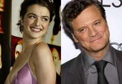
Rachel Weisz es siempre una buena razón para ver una película, y Colin Firth es otra; así que ya tenemos dos buenas razones para no perdernos ‘The Railway Man’, una producción basada en hechos reales cuyo reparto estará encabezado por las dos estrellas inglesas. A pesar de la imagen que he puesto (buscando tu atención, querido lector), la historia no tiene nada de cómico, romántico o sexual, es un drama centrado en las duras experiencias de un hombre que fue capturado, esclavizado y torturado durante la II Guerra Mundial.
‘The Railway Man’ es el título de la exitosa autobiografía del británico Eric Lomax, donde narra su experiencia como prisionero del ejército de Japón. Fue enviado a Tailandia para trabajar en la infame vía del ferrocarril Burma-Siam (el mismo de ‘El puente sobre el río Kwai’), un proyecto que acabó con la vida de miles de hombres. Allí Lomax construyó una radio gracias a la cual podía recibir noticias de la guerra e informar sobre el trayecto del tren; a causa de este hecho, fue interrogado y torturado, para lo cual fue necesaria la intervención de un joven soldado japonés que hablaba inglés. Cinco décadas más tarde, Lomax quiso reunirse con el exsoldado… y os recuerdo que la película no estará protagonizada por Chuck Norris.
Frank Cottrell Boyce y Andy Paterson firman el guion y Jonathan Teplitzky (‘Mejor que el sexo’, ‘Burning Man’) se encarga de la dirección. Aparte de Firth (Lomax adulto) y Weisz (su esposa Patti), también ha sido confirmada la incorporación de Jeremy Irvine (el chaval de ‘War Horse’) para dar vida al protagonista en las escenas del pasado. El rodaje comenzará el próximo mes de febrero y el estreno está previsto para 2013.
PD: Firth volverá a nuestras carteleras con ‘El topo’ (‘Tinker, Tailor, Soldier, Spy’) a partir del 23 de diciembre. Ya queda menos…
Vía | ComingSoon
'La saga Crepúsculo: Amanecer. Parte 1': el anticine
Sat, 26 Nov 2011 12:01:21 GMT

Jacob se ha imprimado.
Estimados Sres. de Summit Entertainment;
Me dirijo a ustedes porque esta semana fui al cine a ver la penúltima entrega de la saga ‘Crepúsculo’, ‘Amanecer. Parte 1’ (‘The Twilight Saga: Breaking Dawn – Part 1’), esperando que al menos estuviera al nivel de la última, y tengo una serie de preguntas que necesito que me responsan. La primera: ¿cómo es posible que hayan presentado al público semejante aberración cinematográfica? Deberían avergonzarse. Sinceramente, creo que si se lo hubieran propuesto, si hubieran pensado “vamos a hacer que se coman un bodrio”, no habrían sido capaces de estrenar algo peor. Con el impresionante dineral que están ganando en todo el mundo gracias a las películas y su merchandising, con un presupuesto de más de cien millones de dólares, tiempo de sobra para preparar el guion, el rodaje y montaje final, y profesionales en nómina como Bill Condon, Guillermo Navarro o Carter Burwell, resulta increíble que hayan producido una de las peores películas de la franquicia, junto a la insufrible ‘Luna nueva’ (‘The Twilight Saga: New Moon’).
Ya se empezó mal con la decisión de dividir en dos partes el cuarto libro de la saga creada por Stephenie Meyer, estirando la historia por pura avaricia. Vale, no hay nada malo en intentar ganar más dinero, se puede entender, pero señores, es absurdo que sus películas duren tanto. El desastre que han estrenado se arrastra miserablemente hasta superar los 110 minutos. ¿Ustedes la han visto, han aguantado hasta el final? ¿Y todos esos minutos eran necesarios? Taylor Lautner corriendo bajo la lluvia sin camiseta, los “vampiros” transportando árboles, el vistazo a la parte trasera del traje de la novia, el plano de la tapa de la basura cerrándose, los “lobos” discutiendo mentalmente en inglés, Bella soñando que gana una partida de ajedrez… ¿en serio? Ya que parten la historia en dos, lo mínimo era contar con dos guiones trabajados, en los que ocurra “algo”, que no transmitan la idea de que se está rellenando metraje con acciones e imágenes insustanciales e innecesarias; pero en lugar de contratar a alguien con talento, han vuelto a pagar a la incompetente Melissa Rosenberg, guionista de una mediocre saga que se podría haber resumido en dos películas. De hora y media cada una, siendo generosos.
Recapitulemos. Ya en ‘Crepúsculo’ quedó claro que la humana Bella y el vampiro Edward se amaban, que ella deseaba que el otro la mordiera para poder vivir juntos eternamente, y que Jacob solo podía ser amigo de la chica. ¿Eran necesarias dos películas más hasta que los protagonistas consumaran su relación? Ah, sí, el dinero… En ‘Luna nueva’, Edward intenta que Bella le olvide porque no quiere que deje de ser humana, pero fracasa (Jacob tiene más músculos pero no cambia nada); con ‘Eclipse’ (‘The Twilight Saga: Eclipse’), de lejos la entrega más divertida, nos enteramos que Edward es un tío tan tradicional (tiene cien años…) que exige a su amada pasar por el altar antes de fornicar; pasan más cosas pero son irrelevantes. Y ya por fin en ‘Amanecer – Parte 1’ llega la boda, la luna de miel y el sexo. Claro, sin protección, es imposible que un vampiro, un muerto que necesita alimentarse de sangre, pueda dejar embarazada a una humana… ¡error! Si brilla a la luz del Sol y es capaz de tener una erección, ¡por supuesto que su semen aún funciona!
Tras media película dedicada a poco más que la boda, la escena de cama para todos los públicos (¿no era una entrega más adulta?) y el descubrimiento de que Bella ha quedado preñada, llega el único conflicto de la película. La chica (llena de golpes porque su marido no puede reprimir su lado violento…) desea parir la “cosa” que se está gestando en su interior, a pesar de que la está matando (el aborto no es una posibilidad, la autora de los libros es mormona). Los demás plantearán sus respectivos puntos de vista mientras el feto (”no es un feto, es un bebé“, corrige un par de veces el prescindible personaje de Nikki Reed) va dejando a Bella con el desagradable aspecto de una yonqui a punto de palmarla, y la manada de lobos planea un feroz ataque porque… bueno, no queda claro. Pasa lo que tiene que pasar (no es necesario haber leído el librillo para anticiparse al evento) y se acabó la película. Bueno, la primera parte, la segunda no se puede ver hasta dentro de un año, y en 3D, supongo, con lo que cerrarán una de las sagas más ridículas y enfermizas jamás realizadas. Necrofilia, zoofilia, pedofilia… Se han lucido, señores, ¿han pensado en el público de la saga? Podían echar un vistazo a las películas de ‘Harry Potter’, donde cuidan los mensajes y los valores que transmiten a su público. ¿Qué ideas están dando las suyas a niñas y adolescentes? ¿Entrega tu vida a un tío guapo (sin importar si es un asesino o un maltratador)?
El torpe guion de Rosenberg, la rutinaria dirección de Condon (algún día tendrían que reconocer que lo contrataron por su apellido) y el afán por exprimir al máximo las posibilidades comerciales de la saga, sin importar la calidad artística de las películas, tienen su reflejo en el mecánico trabajo del reparto, un extenso plantel donde solo unos pocos pueden ser considerados realmente actores sin insultar a la profesión. Robert Pattinson, Billy Burke, Anna Kendrick o Michael Sheen cumplen como pueden con sus personajes (lo de Pattinson tiene mucho mérito, teniendo que encarnar al vampiro más ridículo del cine), mientras que las “interpretaciones” de Kristen Stewart, Lautner, Ashley Greene, Jackson Rathbone o Kellan Lutz son bochornosas. La fórmula de contratar a jóvenes más o menos atractivos para vender la película resultaba razonable en la primera entrega, más barata, desde la segunda pudieron haber mejorado el reparto. Cuando Rachelle Lefevre no pudo participar en ‘Eclipse’ no tuvieron inconveniente en reemplazarla por Bryce Dallas Howard; debieron hacer lo mismo con la mayoría de los personajes. Por otro lado, ¿no les repugna convertir en símbolos sexuales a chicos menores de edad? Lautner es Jacob desde los 16, la misma edad de Booboo Stewart en esta película, donde ya sale luciendo abdominales para el disfrute de espectadoras que podrían ser sus abuelas. Y lo del bebé...
Sin duda son ustedes personas responsables, trabajadoras e inteligentes, con interés por hacer un cine que sea recordado con agrado, así que no quiero despedirme sin pedirles que, por favor, dediquen sus mayores esfuerzos en mejorar ‘Amanecer. Parte 2’ (‘The Twilight Saga: Breaking Dawn – Part 2’), en la medida de lo posible pues ya sé que se encuentra en fase de post-producción. Quizá podrían intentar contratar a un fan declarado de la saga como M. Night Shyamalan, que debe estar un poco desesperado ahora mismo, y rodar algunas escenas adicionales… Y si ya es tarde, les pediría que, al menos, recortasen el metraje al máximo. Con 80 minutos sería más que suficiente. Si lo piensan bien comprobarán que les conviene también a ustedes, así tienen la opción de incluir más pases diarios y recaudar todavía más millones. Por último, y hablando de millones, me ofrezco humildemente para escribir y dirigir los remakes de la saga, que seguro ya tienen en mente sacar dentro de unos años, cuando los chavales se hayan olvidado del romance entre Bella y Edward. Les doy mi palabra de que saldrán películas mucho más divertidas e igualmente rentables.
Quedo a la espera de sus noticias. Atentamente,
Juan Luis Caviaro
- Otra crítica de esta cosa en Blogdecine:
‘La saga Crepúsculo: Amanecer, parte 1’, si te acuestas con vampiros usa protección
'Misión: Imposible - Protocolo Fantasma', vídeo y nuevas imágenes del regreso de Ethan Hunt
Fri, 25 Nov 2011 13:06:09 GMT
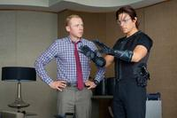
Ya no queda ni siquiera un mes para el estreno de ‘Misión: Imposible – Protocolo Fantasma’ y hemos podido ver una gran cantidad de tráilers hasta conocer el definitivo hace unas semanas. Parecía que ya estaba todo el pescado vendido hasta su estreno, pero Paramount ha decidido que no es el caso y han ido apareciendo nuevas imágenes para que el interés por el estreno de la película el próximo 16 de diciembre no decaiga. En ellas podemos ver a muchos de los personajes de la película, pero también unas cuantas ofrecen un pequeño vistazo del rodaje de ‘Misión: Imposible – Protocolo Fantasma’ como el hecho de poder ver a Brad Bird, director de la cinta y que debuta en el cine en acción real tras dirigir varias joyas del cine animado como ‘El gigante de hierro’, con varios de los protagonistas.
En esta ocasión Ethan Hunt y compañía lo tendrán aún más difícil, ya que la organización para la que trabajan es sospechosa de haber participado en un acto terrorista que podría dar lugar a una guerra nuclear. No obstante, Ethan Hunt no está dispuesto a que se cometa tal injusticia y, junto a su fiel equipo, se lanza a la aventura de desenmascarar a los auténticos responsables y así salvar el buen nombre del FMI. Lo cierto es que el argumento suena a algo que ya hemos visto mil veces, pero yo voy a tener algo de fe al ver el nombre de Christopher McQuarrie entre los guionista, ya que suyo fue el libreto de la estupenda ‘Sospechosos habituales’. Otro aspecto que me llama poderosamente la atención es que el personaje que interpreta Jeremy Renner está encaminado a sustituir a Tom Cruise al frente de la saga en sucesivas entregas, algo que también va a suceder en el caso de la saga Bourne. Y es que Renner es quizá el actor con más papeletas para ser el nuevo gran héroe del cine de acción, credibilidad para ello le sobra.
Como habéis podido ver, las imágenes estáticas no son la única novedad de los últimos días, ya que también se ha hecho pública esa secuencia de la película en la que podemos ver que el personaje de Renner aún no está a la altura de lo que vimos hacer a Tom Cruise en las tres entregas anteriores. Además, ya se sabe que serán los australianos los primeros en poder ver la película el próximo 14 de diciembre y que en USA podrán ver los primeros minutos de ‘El caballero oscuro: La leyenda renace’ a modo de antesala de la película, aunque únicamente durante sus pases en cines IMAX, lo que sin duda disparará los ingresos de ‘Misión: Imposible – Protocolo Fantasma’ en esos cines.
Galería de fotos
(Haz click en una imagen para ampliarla)
Por mi parte, espero que ‘Misión: Imposible – Protocolo Fantasma’ sea al menos la segunda mejor entrega de la saga, ya que tan sólo soy auténtico fan de la primera entrega dirigida por Brian de Palma. El reparto, al que hay unir a gente como Simon Pegg, Paula Patton, Josh Holloway, Michael Nyqvist, Léa Seydoux, Vladimir Mashkov, Anil Kapoor, Ving Rhames (el otro superviviente de la saga desde la primera entrega aparte de Cruise) y Tom Wilkinson a los nombres ya mencionados, también invita al optimismo. ¿Qué esperáis vosotros?
Actualización: Gracias a filmman ya podéis disfrutar de un nuevo vídeo de la película:
Vía | Comingsoon
'Cuenta atrás', tráilers del frenético thriller con Elena Anaya
Fri, 25 Nov 2011 07:34:32 GMT
‘Cuenta atrás’ (‘À bout Portant’), el thriller francés de Fred Cavayé, con Gilles Lellouche, Elena Anaya, Roschdy Zem y Gerard Lanvin, llegará a nuestras pantallas el 20 de enero 2012.
Samuel ha sido acusado de un asesinato que no ha cometido y su esposa, embarazada, ha sido secuestrada. Este enfermero, que trabaja en un hospital, recibe una llamada de los secuestradores que le obligan a ayudar a escapar de su habitación a un herido que está internado con vigilancia policial. Samuel se ve envuelto en una carrera a contrarreloj para salvar a su familia y demostrar su inocencia. A partir de ese momento, empezará su particular cuenta atrás.
Fred Cavayé había dirigido ‘Cruzando el límite’ (‘Pour Elle’), título que posteriormente Paul Haggis adaptó en ‘Los próximos tres días’, con Russell Crowe y Elizabeth Banks.
Tras su estreno en Francia, ‘Cuenta atrás’ ha tenido gran éxito de público y crítica. Estos últimos le han dirigido frases como: “Una carrera a contrarreloj que deja sin aliento al espectador” (Le Parisien). “Un thriller romántico de pura adrenalina con la ayuda de un reparto carismático”. (Télé 7 Jours). “El montaje vivo, el ritmo hiperactivo y la dirección de actores de una precisión quirúrgica hacen desde ahora, este thriller, una referencia”. (Paris Match). “‘Cuenta atrás’ es la cinta de acción de la temporada”. (Elle).
Que se hable de montaje frenético y de ritmo vivo en un film francés nos suena ligeramente increíble, pues no es a lo que nos tiene acostumbrada la filmografía vecina que, incluso cuando se adentra en el thriller o el cine de acción, mantiene su tempo pausado y contemplativo. La han comparado con ‘Frenético‘ o ‘El Fugitivo’. Lo cierto es que el primer tráiler sí que da esa impresión de velocidad vertiginosa y despierta todas las ganas de ver la película, mientras que el siguiente muestra más los colores de lo que le achacamos al cine francés y genera mayores dudas. Con que ‘Cuenta atrás’ ofreciese la mitad de lo que aseguran las observaciones y comparaciones de la prensa, me conformaría.
Vía | A ContraCorrienteFilms.
Estrenos DVD y Blu-ray | 25 de noviembre | Los pitufos, las artes marciales y el Woody Allen maduro
Fri, 25 Nov 2011 00:03:14 GMT
¡Amigos, coro de vecinoas, jóvenes lectores! ¡Lllegan los Pitufos, llega Jet Li y llegan más ediciones de Woody Allen en alta definición! No os puedo dar mejores noticias, snif, pero así es la vida, extraña y misteriosa, a veces incluso azulada y destinada a convertir nuestros mitos de infancia en versiones de carne y hueso con el actor cómico de moda apoyando. Yo entiendo que los padres tienen hijos y ante esa tesitura no siempre se puede invocar a Hayao Miyazaki o al Dr. Seuss, pero también entiendo que el coleccionista encontrará su dosis de amor, de felicidad, de esperanza en esta semana con ositos pandas y criaturas azules, pero también con hostias como panes y la inteligencia genialoide de un judío neurótico.
¿Qué comprar? Eso no os lo diré nobles espíritus, tendréis que ser vosotros, con vuestros comentarios y vuestra sonrisa los que me digáis qué edición vale la pena. Yo os diría que la vida es corta, que una noche de vino y buen comer es maravillosa, pero lo diría mintiendo, pues todos terminamos comprando nuestras películas favoritas así que muchachos, decid qué.
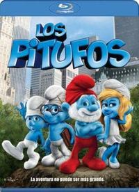
‘Los Pitufos’
¿Merecían estas criaturas entrañables un destino mayor que el de una adaptación firmada por Raja Gosnell? Estoy de acuerdo, pero no sería realmente sano si yo empezara a pitufar maldades sobre una pitufada en la que no he pitufado (ni pitufaré). Evidenciado mi alto ingenio para recomendaros esta compra, tan relevante y omnipresente como destinada a los chavales de la casa os pitufo a los comentarios para que me contéis qué tal. Eso sí, sale Hank Azaria haciendo del entrañable y villano Gargamel y Neil Patrick Harris, un actor que ya lo pitufa por sí solo, anda por ahí también. En DVD (14,95) y Blu-Ray (17,95) siendo la edición azul en Blu-Ray (risas) la que lleva extras, documentales y escenas eliminadas.
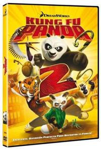
‘Kung Fu Panda 2’
En la segunda entrega de las aventuras de Po tendremos peligros inenarrables, un enemigo mucho más poderoso y chistes sobre Osos Panda todavía cargados de torpeza. ¿Emocionante, verdad? ¿No lo esperabáis, eh? ¿Creativo, eh? ¿Excitante, rompedor, increíble? Bueno, pues no estoy de guasa: esta secuela es realmente más espectacular y contiene las mejores set pieces que ha hecho DreamWorks SKG en una película desde…eh. Desde la primera entrega, sí. Es una pena que, snif, la narración parezca un poquito ahogada y no exista el renovado interés por lo humano que mostraron en ‘Como entrenar a tu dragón’ (How to train your dragon, 2010). El DVD cuesta 20,85 y sus extras (tráileres, documentales promocionales…) demuestran que el tirón de la saga no exige mayores mimos. Sacad el osito en vuestro interior, nobles pagafantas.
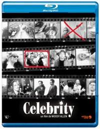
‘Poderosa Afrodita; Todos dicen I love you; Celebrity’
¡Llega el Woody Allen de los 90! Estos tres títulos son una celebración dionisíaca del cine con resultados a veces desiguales, pero siempre luminosos. Woody Allen es genial, os digo cargado de admiración, y no creáis, oh muchachos, que no os escucho. Aunque ‘Poderosa Afrodita’ (Mighty Aphrodite, 1995) es una película divertidísima y ‘Todos dicen I love you’ (Everyone Says I love you, 1996) es mucho más encantadora que buena, lo que importa, siempre, es que hay una línea memorable, una sensación de familiaridad que evita cualquier menosprecio. Creo indudablemente que ‘Celebrity’ (id, 1998) es su título más injustamente infravalorado: no he olvidado todavía a Charlize Theron y creo que Kenneth Branagh hizo una estupenda variación del arquetipo alleniano, acentuando su fracaso y su patetismo, volviéndolo mucho menos simpático, algo que encaja con el tono de derrota de la película, una descripción del mundo de la fama que no deja lugar a la esperanza o al humor. Woody Allen hace de mi vida algo mucho mejor, aunque todos sus personajes sean blancos, de clase media alta neoyorquina y ninguno de ellos parezca tener ningún problema remotamente similar al mío. ¡Dejad de reír! ¡Dejadme tranquilo! Woody Allen es universal. ¿Quién no ha seducido a una prostituta con el rostro de Mira Sorvino y enamorado a Julia Roberts? ¡Basta ya! 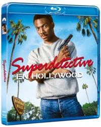
‘Superdetective en Hollywood’
Cuando Eddie Murphy era un hombre deslenguado y mordaz, yo no había nacido (¡imaginad!). Cuando la sintonía de esta película era todavía mítica y no el recuerdo infame de una ranita creada por algún sórdido adicto al speed o a la metanfetamina. ¡Pero os diré más! Esta película fue un éxito porque empezó a demostrar a Murphy que podía ser, también, una estrella de adicción como Harrison Ford u otros actores, incorporando su tono callejero y sin perder ápice de molonidad. A mi la película jamás me ha parecido gran cosa, pero cuesta 19,95, incluye audiocomentario del director y algunos documentales del fenómeno. ¡Yo soy joven y vosotros muy impetuosos! 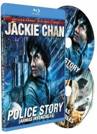
‘Police Story; Érase una vez en China; Juego con la muerte’
Jackie Chan tiene un problema y él los problemas los soluciona con una mezcla desternillante de hostias y risa floja. ¡Ya me gustaría a mí solucionar mis problemas así! Pero no os hablaré del flato hispano sino del inicio de una divertidísima, impresionante y espectacular franquicia que hace de la coreografía bufa y la persecución enloquecida su gran qué. Está en BluRay y vosotros, mortales amantes de asia, deberiáis comprarla.
Por otra parte, el segundo título de Selecta Vision supuso la llegada de una nueva ola al cine de artes marciales. Una nueva ola, y con esto soy literal, de veras porque con llega llegó la independencia tanto de las tendencias de los ochenta como la de los años setenta.: lo que estaba haciendo Tsui Hark con esta primera entrega, el descubrimiento de Jet Li para el conocedor del género, es crear su primera gran épica nacionalista en forma de relato de kung fu. El género ya había sido político antes, pero esta película es un canto de gloria a una patria perdida.: un legendario maestro deberá proteger a unos indefensos de ser traficados como esclavos a América.
Por supuesto la solución no pasará por imitar a Gandhi, precisamente, sino por liarse a hostias, a patadas, a gritos en falsete y efectos de sonido impresionantes. Clásico de los gimnasiones españoles, sí, Bruce Lee falleció en el rodaje, ajá, está fuera de plano y con dobles media película, sí, además ese es el argumento de la película (una estrella que quiere ser asesinada en el rodaje), está firmada por el patosete Robert Clouse de ‘Operación Dragón’ (Enter the dragon, 1972) y no voy a contaros otra anécdota manida que ya conocéis. Se editan en Blu-Ray, la vida es bella, pero incluye también el DVD, la vida es incluso GENEROSA. 19,99 euros cada título, para amigos, vecinos y luchadores en retiro espiritual.
Eva Hache presentará los Goya, que homenajearán a la directora Josefina Molina
Thu, 24 Nov 2011 10:36:53 GMT
El 19 de febrero de 2012 se celebrará la gala de los Premios Goya, los premios de la Cinematografía de la Academia del Cine español, en el Palacio Municipal de Congresos del Campo de las Naciones de Madrid. Conducirá la ceremonia, que será retransmitida por TVE en directo a partir de las 22:00 horas, la presentadora, humorista y actriz Eva Hache, que debuta en esta labor. Hache asegura que será una gala muy divertida y llena de sorpresas.
Lo cierto es que, más que decirnos quién la va a presentar, nos podrían decir qué guionistas van a escribir las bromas. Porque, si las últimas veces no me ha hecho demasiada gracia por es por la cara o cuerpo que los encarnaba, sino porque los textos no resultaban todo lo ingeniosos que cabría esperar. Por otro lado, con los actores cómicos tan buenos que hay en España, este populismo de elegir rostros tan televisivos para aumentar las posibilidades de tener una audiencia elevada a mí casi me elimina como espectadora y seguro que les ocurre así a muchos cinéfilos, por lo que más o menos están excluyendo de la gala del cine a quienes más siguen el Séptimo Arte. Si, al menos, se tratase de rostros televisivos, pero de ficción, estaríamos bastante más cerca de los gustos cinéfilos.
El Goya de Honor se concederá a la veterana cineasta Josefina Molina, primera mujer que obtuvo el título de directora/realizadora en la Escuela Oficial de Cinematografía, en 1969. Nacida en Córdoba el 14 de noviembre de 1936, Molina también es licenciada en Ciencias Políticas por la Universidad Complutense y ha sido escritora y directora teatral. Su currículum cinematográfico incluye títulos como ‘Vera, un cuento cruel’ (1973), ‘El camino’ (1977), ‘Escrito en América’ (1979), ‘La Lola se va a los puertos’ (1993) o ‘Entre naranjos’ (1998). Si en cine la conocemos poco es porque su ha realizado su labor principalmente en televisión, para que la ha realizado numerosas producciones, como ‘Teresa de Jesús’ (1984).
Molina afirma que toma este reconocimiento en representación de “una generación de mujeres que dirigieron cine […] Está muy bien que nos den premios a las mujeres” y más a mujeres directoras, ya que hasta ahora solo se le había entregado a dos actrices y cantantes: Rafaela Aparicio (1988) e Imperio Argentina (1989).
Vía | Cine por la Red.
F. Javier Gutiérrez deja 'House of Horror' a Xavier Gens, para dirigir 'El cuervo'
Thu, 24 Nov 2011 06:31:01 GMT
El director español F. Javier Gutiérrez, responsable de ‘Tres días’ (‘Before the Fall’, 2007), ha abandonado la producción de ‘House Of Horror’ por razones que no se han dado a conocer. Es posible que se deba a que, en lugar de este proyecto, Gutiérrez asuma el del relanzamiento de ‘El cuervo’ (‘The Crow’), película que ya han abandonado tanto Stephen Norrington, como Juan Carlos Fresnadillo. Recientemente, surgieron rumores sobre que estaba negociando encargarse de la realización, pero no hay ningún comunicado oficial al respecto. También se habló de que Mark Wahlberg podría estar en conversaciones para retomar el papel protagonista, al que ha renunciado Bradley Cooper.
Volviendo a ‘House Of Horror’, se trata de la primera película que producirá James Wan, creador de la franquicia de ‘Saw’, dentro de un plan de producción de ocho cintas de terror para Icon Entertainment. Este film, que combinará el rodaje directo, con material de teórico archivo, noticiarios y vídeos de vigilancia de una celda de interrogatorios, tendrá al francés Xavier Gens (‘Hitman’, ‘The Divide’, ‘ Frontiere(s)’) en el puesto de Gutiérrez. El guion de ‘House Of Horror’, que se construye sobre una idea de Wan, es obra de Max La Bella.
Gens, a quien se le arrebataron las decisiones sobre el montaje final de ‘Hitman‘ por ser demasiado violento, parece el director perfecto para encargarse de esta película que nos llevará a las consecuencias de una masacre que ha tenido lugar en una casa abandonada en la que se han encontrado los cadáveres de cinco estudiantes universitarios brutalmente asesinados. Las investigaciones descubrirán que los jóvenes eran cazafantasmas aficionados que buscaban un fenómeno paranormal en esa casa, que se consideraba encantada. Un flashback nos mostrará todo el horror que tuvo lugar en la mansión. Un sexto chico, que se encuentra en un calabozo de una comisaría, irá contando lo ocurrido y asegurará que está poseído por el diablo y que se ha traído de la casa un objeto que sirve de puerta al infierno.
Esta sinopsis, que tiene aspecto de contar hasta el final –espero que no–, no suena del todo mal y, a pesar de que esa mezcla de formatos está más que vista y me parece un truco demasiado fácil para atraer a los espectadores, quizá el resultado de todo ello resulte interesante. Lo que no parece muy halagüeño es la biofilmografía del director, pues quienes han podido ver algo suyo no están precisamente contentos.
Vía | Shock Till You Drop.
'John Carter', nueva imagen oficial de la esperada película de Andrew Stanton
Wed, 23 Nov 2011 16:56:39 GMT
Seguimos con nuevas imágenes de algunos de los títulos más potentes que nos llegarán en 2012. A las de ‘El caballero oscuro: La leyenda renace’ (‘The Dark Knight Rises’) y ‘Prometheus’, sumamos ahora la última foto oficial de ‘John Carter’, el nuevo trabajo de Andrew Stanton (‘Buscando a Nemo’, ‘WALL·E’). Imposible no pensar en ‘Star Wars’, ¿verdad? Esperemos que la película sea tan buena como las dos primeras entregas de la saga de George Lucas (y me refiero a los episodios IV y V, evidentemente, el I y el II son demasiado infantiles), que no se trate solo de una comercial fantasía llena repleta de efectos visuales. Alberto tuvo la oportunidad de asistir a un acto de presentación de la película en Londres y volvió encantado tanto por la coherencia de Stanton como por las escenas que mostraron, hasta el punto de asegurar que será un rotundo éxito. Ya veremos, desde luego hay muchas ganas de verla; lamentablemente todavía hay que esperar varios meses, se estrena el 9 de marzo en Estados Unidos y el 23 en España.
Según ha revelado el director, en la escena a la que pertenece el fotograma, el protagonista no está tan jodido como puede parecer, ya que la gravedad del planeta no es la misma que en la Tierra y puede saltar y desplazarse de forma espectacular, como si pudiese volar; claro que, como veis, está encadenado, y el bicharraco (un gigantesco “simio blanco”) parece estar realmente hambriento. Recordemos que ‘John Carter’ es una adaptación cinematográfica de la obra de Edgar Rice Burroughs (‘John Carter of Mars’), escrita para el cine por Mark Andrews, Michael Chabon y Stanton. La historia se centra en un excombatiente de la Guerra Civil estadounidense que despierta en Marte, donde se embarca en una aventura para ayudar a una princesa. Taylor Kitsch, Lynn Collins, Samantha Morton, Mark Strong, Willem Dafoe, Ciarán Hinds, Dominic West, James Purefoy, Thomas Hayden Church y Bryan Cranston protagonizan la película, que podrá verse en 2D y 3D.
PD: En breve aparecerá un nuevo tráiler, estad atentos.
Vía | Entertainment Weekly
'El cosmonauta', tráiler del thriller de ciencia ficción
Wed, 23 Nov 2011 06:38:24 GMT
Habíamos hablado en un par de ocasiones sobre ‘El cosmonauta’, una coproducción entre España y Rusia, que utiliza el Crowdfunding y licencias Creative Commons y que será distribuida a través de internet, DVD, televisión y cine, al mismo tiempo. Ya que la experiencia es, en cierta medida, pionera, ha obtenido una gran aceptación, pero si este modo de financiar el cine se hiciese habitual, no creo que tuviese el mismo tirón, salvo que los proyectos sonasen muy atractivos a priori, pues no veo a todo el mundo dispuesto a invertir en cada una de las películas que se ponen en marcha, aunque sean 2 eurillos.
Nicolás Alcalá dirige sobre un guion escrito por él, basándose en el volumen ‘Poética para cosmonautas’, una historia sobre la inmensidad del dolor y el extravío que supone mirar de frente a la soledad del desamor, que escribió a sus 22 años Yago Ferreiro, alias Henry Pierrot. Los protagonistas son Katrine De Candole, Leon Ockenden y Max Wrottesley.
‘El cosmonauta’ cuenta la historia de ciencia ficción, de dos cosmonautas que se pierden en el espacio: uno de ellos, regresa a la Tierra y el otro queda atrapado en algún lugar que confunde con nuestro planeta, a pesar de haberlo encontrado vacío. En 1975, el primer cosmonauta ruso en la Luna no consigue regresar, y se le da por perdido en el espacio. Él, sin embargo, a través de fantasmales mensajes de radio, clama haber vuelto a la Tierra y haberla encontrado vacía. Su irreal presencia y su voz irán destruyendo poco a poco el mundo de sus seres queridos.
El aspecto de lo que se puede ver en el tráiler no es malo, pero por encima de la sensación de calidad, prevalece para mí una mayor de extrañeza, es decir, de que estoy viendo algo extraño, imágenes de una película que difícilmente podría concluir si me atrae o no. Pero la sinopsis promete cierta originalidad y un componente que aportaría una interesante prospección en los personajes dentro de un marco de ciencia ficción, que para mí siempre es bienvenido.
Vía | Página oficial de la película.
Taquilla española | Y amaneció
Tue, 22 Nov 2011 12:57:01 GMT
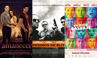
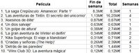
Era inevitable. ‘La saga Crepúsculo: Amanecer. Parte 1’ (‘The Twilight Saga: Breaking Dawn Part 1’) ha arrasado también en España. Pero al igual que en Estados Unidos, la nueva entrega de los vampiros románticos no ha conseguido romper ningún récord importante de recaudación, algo que decepcionará a su entusiasta legión de fans (no lloréis, ya sabéis que el año que viene hay otra oportunidad). Lo que sí ha conseguido en España la película del vil preservativo de Bill Condon es superar las cifras de las entregas anteriores de la saga y convertirse en el estreno más taquillero del año (hasta ahora las mejores cifras eran las de ‘Torrente 4: Lethal Crisis’).
Como podéis ver en la tabla de arriba, ‘Amanecer. Parte 1’ se ha comido prácticamente todo el pastel. Aun así, han quedado sustanciosas sobras para dos novedades con llamativos repartos que aspiraban a quedarse con el público adulto del pasado fin de semana. ‘Asesinos de élite’ (‘Killer Elite’), el thriller de acción con Jason Statham, Robert de Niro y Clive Owen, logra la tercera posición del “top ten” con unas cifras correctas, quedándose cerca del millón de euros; lo nuevo de Roman Polanski, ‘Un dios salvaje’ (‘Carnage’), se tiene que conformar con la sexta plaza y algo más de 600.000 euros, pero hay que señalar que se proyectaba en la mitad de pantallas que la anterior (ha conseguido el segundo mejor promedio de la semana después de ‘Amanecer. Parte 1’). Por lo demás cabe destacar que la adaptación cinematográfica de ‘Tintín’ dirigida por Steven Spielberg sigue funcionando bien tras un mes en cartelera y el escaso interés que ha despertado otra película de animación, ‘Winx Club 3D: La aventura mágica’ (‘Winx Club 3D: Magica Avventura’), décima en su primer fin de semana con una recaudación de 120.000 euros.
PD: Entre los estrenos de este viernes destacan ‘Un método peligroso’ y ‘El gato con botas’. ¿Creéis que alguna de las dos puede arrebatar el número uno a la saga ‘Crepúsculo’?
Datos | TioOscar
'Antes del amanecer' tendrá otra continuación
Tue, 22 Nov 2011 09:12:37 GMT
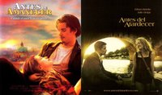
No sé lo que vamos a hacer, pero los tres hemos estado hablando mucho durante los últimos seis meses. Los tres hemos tenido la sensación de que estamos listos para volver a recuperar los personajes. [...] Vamos a intentar escribirla este año.
Básicamente, eso es la noticia. Unas declaraciones de Ethan Hawke en las que reconoce que Julie Delpy, Richard Linklater y él están pensando seriamente en la posibilidad de filmar una nueva continuación de ‘Antes del amanecer’ (‘Before Sunrise’, 1995). El dato es que pasaron nueve años entre ésa y la segunda parte, ‘Antes del atardecer’ (‘Before Sunset’), así que la idea sería empezar a rodar la tercera a lo largo del año que viene y estrenar en 2013. A pesar de que aún no tienen el guion, no es una idea descabellada si los Hawke, Delpy y Linklater están decididos, más o menos son dos personajes hablando y paseando durante una hora y media. Se puede producir en poco tiempo.
A quien no haya visto ninguna de las dos películas, comentarle que la primera gira en torno a Jesse, un joven estadounidense, y Celine, una joven francesa, que se conocen en un tren y pasan una noche en Viena, sabiendo que probablemente no volverán a verse más. La segunda entrega retoma la historia nueve años después, en París, donde Jesse está presentando una novela; Celine va a verle y pasan un rato juntos recorriendo la ciudad y poniéndose al día sobre sus respectivas vidas (que no han salido como esperaban), siempre mirando el reloj porque él tiene programado un vuelo para volver a su país. ¿Hace falta una tercera? No creo que hiciese falta la segunda, pero les salió una película más redonda, y más auténtica. Quizá lo más interesante sería dejar pasar más tiempo y rodar una ‘Antes del anochecer’ con los actores en edad de jubilación…
PD: También es noticia que Delpy ha sido contratada para dirigir un biopic del músico Joe Strummer.
Vía | Theplaylist
Carlos Saura recibe la Medalla Internacional De Las Artes
Tue, 22 Nov 2011 06:29:35 GMT
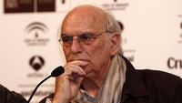
El cineasta, escritor, escenógrafo, fotógrafo y dibujante Carlos Saura recibe hoy, 22 de noviembre, la Medalla Internacional De Las Artes, en reconocimiento a su destacada trayectoria cinematográfica y por su contribución a la divulgación del arte y la cultura. Uno de los realizadores españoles con mayor proyección internacional, puede ser el que durante más tiempo haya personificado el cine de autor en nuestro país, de la mano de su productor, Elías Querejeta.
Especialista en hallar metáforas con las que criticar la situación social y política para superar la censura de la dictadura, Saura realizó películas críticas como ‘La caza’, que le valió el premio al mejor director en el Festival de Berlín, sin que su clara alusión a la Guerra Civil fuese detectada. ‘La prima Angélica’ o ‘Cría cuervos’, que representaban la situación política española en forma de familias lideradas por patriarcas, servían a un mismo propósito. Ya en democracia, Saura realizó ‘Deprisa, deprisa’, que le valió un Oso de Oro en la Berlinale; ‘¡Ay, Carmela!’, ganadora de 13 merecidos Premios Goya; ‘Buñuel y la mesa del rey Salomón’, ganadora de un Goya, y ‘Fados’, asimismo galardonada con un Premio Goya. Su última película hasta la fecha ha sido ‘Flamenco, Flamenco’ (2010).
Saura ya había obtenido el Premio Nacional de Cinematografía en 1980, la Medalla de Oro de la Academia de las Ciencias y las Artes Cinematográficas de España en 1992. También se le ha otorgado, por el Gobierno francés, la Orden de Artes y Letras de Francia, y ha sido investido, por el Gobierno italiano, como Gran Oficial de la Orden del Mérito de la República Italiana. Es también Doctor Honoris Causa por la Universidad de Zaragoza y la Universidad Nacional Autónoma de México. Pero no solo ha sido reconocido en España y el mundo de habla hispana, sino que Carlos Saura es, junto con Luis Buñuel y Pedro Almodóvar, el director español que más premios y reconocimiento ha recibido en el extranjero. Películas como ‘Carmen’ fueron fenómenos sociológicos en toda Europa.
La concesión de este galardón de la Comunidad de Madrid, que se creó en abril de 2000, se decidió el 20 de octubre por parte del Consejo de Gobierno de la Comunidad de Madrid, a propuesta del vicepresidente y consejero de Cultura y Deporte, Ignacio González.
Por otra parte, Carmen Maura recibirá el Premio de Cultura en la modalidad de Cine, Josep María Pou, quien también ha trabajado en cine, en la categoría de Teatro, y Juan Marsé, cuyas obras se han llevado en numerosas ocasiones a la gran pantalla, en la de Literatura.
Vía | Por la Red.